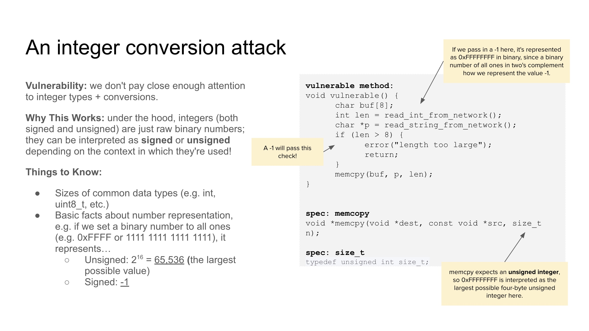
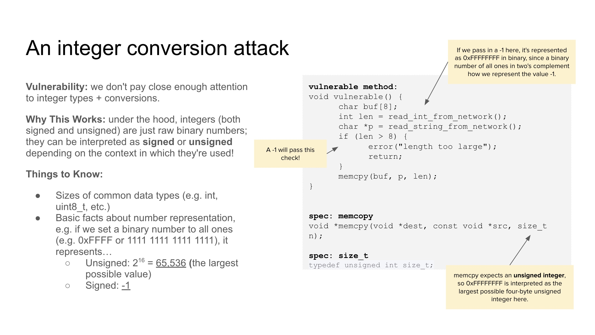
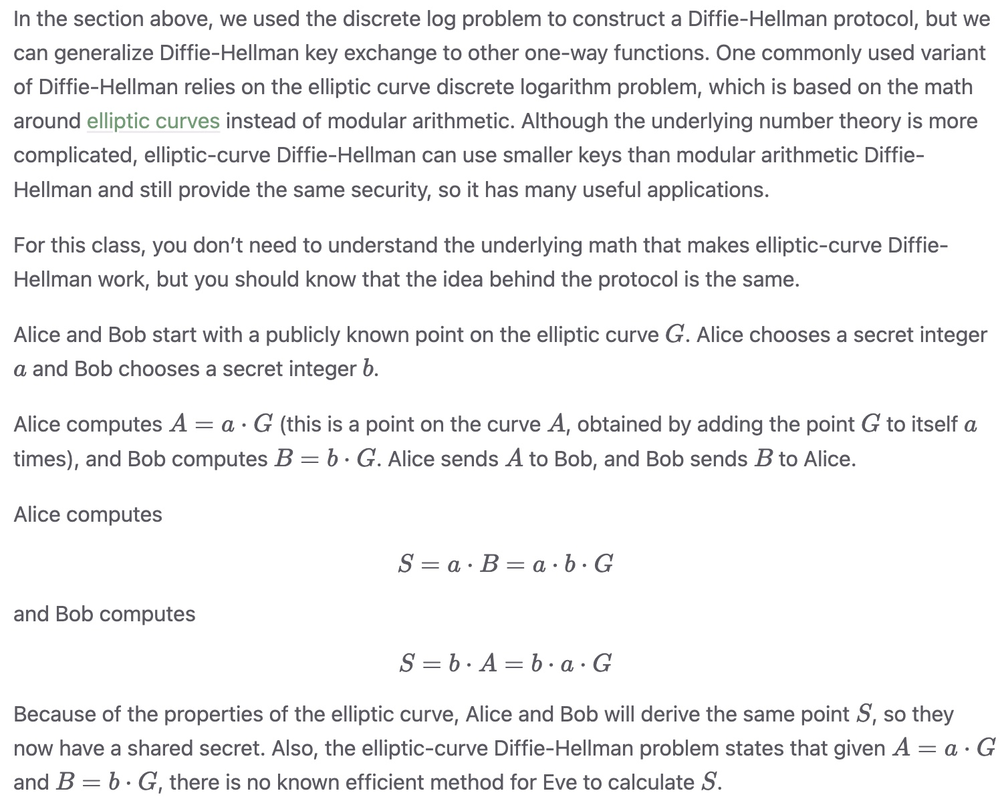
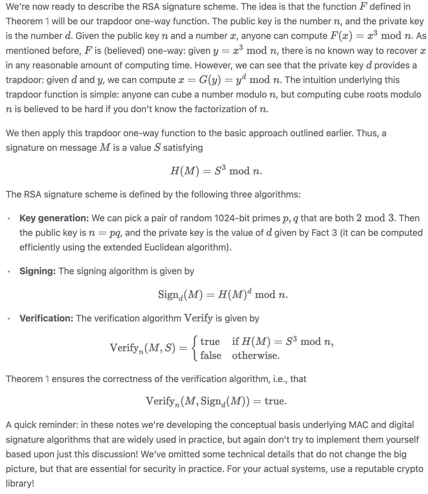

Computer Science 161: Computer Security
Home
Overview
1. Security Principles
2. Memory Safety: x86 Assembly and Call Stack, Memory Safety Vulnerabilities, Mitigating Memory-Safety Vulnerabilities
3. Cryptography:
4. Web Security:
5. Network Security:
Security Principles
Summary: Always know your threat model-- the who and what. Consider human factors in security implementations-- keep tools fool proof and user friendly. No system is ever 100% secure, its a matter of resources. Don't put a 100 dollar lock on a dollar item, and vice versa. If an attack is inevitable always at least have detection of said attack when prevention is not possible. Layer defenses in depth. Always limit access to least privilege, give enough access to get the job done. Split up privilege so no one party has complete access. Takes multiple to launch the nuke. Ensure mediation, check all access points in and out. Never rely on obscurity for security-- the deets always get out. Use fail safe defaults-- meaning when a fail happens it better default to a safe space. Design security from the start don't try to back track. The TCB, the portion of the system that must operate correctly in order for the security goals of the system to be assured. Keep the principle of Time-of-Check To Time-Of-Use in mind.
Know your threat model:
Threat Model: a model of who your attacker is and what resources they have.
Common Assumptions that are taken into account for attackers:
The attacker can inter with your systems without anyone noticing.
The attacker has some general information about your system.
The attacker is persistent and lucky.
The attacker has the resources required to undertake the attack.
The attacker can coordinate several complex attacks across various systems.
Every system is a potential target.
"
Consider Human Factors:
Security systems must be usable by ordinary people and therefore must be designed to take into account the role that humans will play.
Takeaway: consider the tools that are presented to users, and try to make them fool-proof and as user-friendly as possible.
Security is Economics:
Security is often a cost-benefit analysis where someone needs to make a decision regarding how much security is worth.
A corollary of this principle is you should focus your energy on securing the weakest links. Security is like a chain: a system is only as secure as the weakest link. Attackers follow the path of least resistance, and they will attack the system at its weakest point.
A closely related principle is conservative design, which states that systems should be evaluated according to the worst security failure that is at all plausible, under assumptions favorable to the attacker.
Detect if you can't Prevent:
If prevention is stopping an attack from taking place, detection is simply learning that the attack has taken place, and response would be doing something about the attack. The idea is that if you cannot prevent the attack from happening, you should at least be able to know that the attack has happened. Once you know that the attack has happened, you should find a way to respond, since detection without response is pointless.
When dealing with response, you should always assume that bad things will happen, and therefore prepare your systems for the worst case outcome.
Defense in depth:
Defense in Depth: defenses should be layered together so an attacker would have to breach all the defenses to successfully attack a system.
Beware of diminishing returns–if you’ve already built 100 walls, the 101st wall may not add enough additional protection to justify the cost of building it (security is economics).
Least Privilege:
Give a program the set of access privileges that it legitimately needs to do its job—but nothing more. Try to minimize how much privilege you give each program and system component.
Least privilege is an enormously powerful approach. It doesn’t reduce the probability of failure, but it can reduce the expected cost of failures. The less privilege that a program has, the less harm it can do if it goes awry or becomes subverted.
Separation of Responsibility:
Split up privilege, so no one person or program has complete power. Require more than one party to approve before access is granted.
In summary, if you need to perform a privileged action, require multiple parties to work together to exercise that privilege, since it is more likely for a single party to be malicious than for all of the parties to be malicious and collude with one another.
Ensure Complete Mediation:
When enforcing access control policies, make sure that you check every access to every object. This kind of thinking is helpful to detect where vulnerabilities could be. As such, you have to ensure that all access is monitored and protected. One way to accomplish this is through a reference monitor, which is a single point through which all access must occur.
Shannon's Maxim:
Shannon’s Maxim states that the attacker knows the system that they are attacking.
“Security through obscurity” refers to systems that rely on the secrecy of their design, algorithms, or source code to be secure. The issue with this, however, is that it is extremely brittle and it is often difficult to keep the design of a system secret from a sufficiently motivated attacker. Historically, security through obscurity has a lousy track record: many systems that have relied upon the secrecy of their code or design for security have failed miserably.
As such, you should never rely on obscurity as part of your security. Always assume that the attacker knows every detail about the system that you are working with (including its algorithms, hardware, defenses, etc.)
erckhoff’s Principle, which states that cryptographic systems should remain secure even when the attacker knows all internal details of the system.
Use Fail-Safe Defaults:
Choose default settings that “fail safe”, balancing security with usability when a system goes down. Ensure that if the security mechanisms fail or crash, they will default to secure behavior, not to insecure behavior.
Design security in from the start:
Trying to retrofit security to an existing application after it has already been spec’ed, designed, and implemented is usually a very difficult proposition. At that point, you’re stuck with whatever architecture has been chosen, and you don’t have the option of decomposing the system in a way that ensures least privilege, separation of privilege, complete mediation, defense in depth, and other good properties. Backwards compatibility is often particularly painful, because you can be stuck with supporting the worst insecurities of all previous versions of the software.
The Trusted Computing Base (TCB):
In any system, the trusted computing base (TCB) is that portion of the system that must operate correctly in order for the security goals of the system to be assured. We have to rely on every component in the TCB to work correctly. However, anything that is outside the TCB isn’t relied upon in any way; even if it misbehaves or operates maliciously, it cannot defeat the system’s security goals. Generally, the TCB is made to be as small as possible since a smaller, simpler TCB is easier to write and audit.
TCB Design Principles:
Unbypassable: there must be no way to breach system security by bypassing the TCB.
Tamper-resistant: the TCB should be protected from tampering by anyone else.
Verifiable: It should be possible to verify the correctness of the TCB.
Design your system so that as much code as possible can be moved outside the TCB.
Benefits of TCBs: The notion of a TCB is a very powerful and pragmatic one as it allows a primitive yet effective form of modularity. It lets us separate the system into two parts: the part that is security-critical (the TCB), and everything else.
s
TOCTTOU Vulnerabilities:
This is known as a Time-Of-Check To Time-Of-Use (TOCTTOU) vulnerability, because between the check and the use of whatever state was checked, the state somehow changed.
x86 Assembly and Call Stack
Number Representation:
At the lowest level, computers store memory as individual bits, where each bit is either 0 or 1.
1 nibble = 4 bits
1 byte = 8 bits
1 word = 32 bits(on 32-bit architecture)
A "word" is the size of a pointer, which depends on your CPU architecture.
Call Stack:
The compiler translates your C code into assembly instructions. 61c uses the RISC-V instruction set but in 161 we use x86, which is more commonly seen in the real world.
The assembler translates the assembly instructions from the compiler into machine code.
The linker resolves dependencies on external libraries. After the linker finishes linking external libraries, it outputs a binary executable of the program that you can run.
The user runs the executable, the loader sets up an address space in memory and runs the machine code instructions in the executable.
C memory layout:
At runtime, the OS gives the program an address space to store any state necessary for program execution. Each byte has a unique address. The size of the address space depends on the OS and CPU architecture. In a 32 bit system address are 32 bits long, which means the address space has 2^32 bytes of memory.
The code section contains executable instructions of the program. The assembler and linker output raw bytes that can be interpreted as machine code. These bytes are stored in the code section.
The static section contains constants and static variables that never change during program execution, and are usually allocated when the program starts.
The heap stores dynamically allocated data. When malloc is called in C, memory is allocated on the heap and persists until free is called. The heap starts at lower addresses and "grows up" to higher addresses as more memory is allocated.
The stack stores local variables and other information associated with function calls. The stack starts at higher addresses and "grows down" as more functions are called.
x86 is a Little Endian system this means when storing a word in memory the least significant byte is stored as the lowest address, and the most significant byte is stored at the highest address.
Registers:
In addition to teh 2^32 bytes of memory in the address space, there are also registers, which store memory directly on the CPU. Each register can store one word. Unlike memory registers do not have addresses. Instead, registers are referred to by names. There are three special x86 registers that are relevant:
eip: the instruction pointer, stores that address fo teh machine instruction currently being executed. IN RISC-V this register is called the PC.
ebp: the base pointer, stores the address of the top of the current stack frame. IN RISC-V systems this register is called the FP.
esp: the stack pointer, stores the address of the bottom of the current stack frame. In RISC-V this register is called the SP.
eax and ebx are general purpose registers in x86
Note: The eip register points to the code section of memory while the ebp and esp registers typically point to stack memory.
Stack--Pushing and Popping:
When it is desirable to save a variable on the stack there are two steps to take. First allocated additional space on the stack by decrementing the esp. Next store the value in the newly allocated space. The x86 push instruction does both of these steps to add a value to the stack. To remove a value from the stack increments the esp register, in x86 the pop instruction does this. It also takes the value that was just popped and copies the value to a register. Note when we pop a value off the stack the bits of memory aren't removed but the memory space becomes undefined.
x86 calling convention:
This class uses AT&T x86 syntax(since that is what GDB uses). This means that the destination register comes last; note that this is in contrast with RISc_v assembly where the destination register comes first. Suppose our assembly instruction was addl $0x*, %ebx; here, the opcode is addl, the source is $0x8, and the destination register is %ebx, so in pseudocode this can be read as EBX = EBX + 0x8.
References to registers are preceded with a percent sign, so if we wanted to reference eax, we would do so as %eax. Immediates are preceded with a dollar sign(i.e. $1, $0x4, etc.). Furthermore, memory references use parenthesis and can have immediate offsets; for example. 12(%esp) dereferences memory 12 bytes above the address contained in ESP. If parenthesis are used without an immediate offset, the offset can be thought of as an implicit 0.
x86 function calls:
When a function is called, the stack allocates extra space to store local variables and other information relevant to that function. The stack grows down, so this extra space will be at lower addresses in memory. Once the function returns, the space on the stack is freed up for future function calls. In a function call, the caller calls the callee. Program execution starts in the caller, moves to the callee as a result of the function call and then returns to the caller after the function call completes.
When a function call is made in x86 the three special registers-- eip, evp, esp --need to be updated. The eip needs to be changed to point to the instructions of the callee. The ebp and esp currently point to the top and bottom of the caller stack frame, respectively. Both registers need to be updated to point to the top and bottom of a new stack frame for the callee. When the function returns the old register values need to be restored, so that the rest of the caller function can execute. There are 11 steps to calling an x86 function and returning:
1. Push arguments onto the stack. RISC-V passes arguments by storing them in registers, but x86 passes arguments by pushing them onto the stack. Note that esp is decrements as we push arguments onto the stack. Arguments are pushed onto the stack in reverse order.
2. Push the old eip(rip) on the stack. Before changing the value of the eip register its needed to save the current value on the stack. When the eip is pushed to the stack its is called the old eip or the rip(return instruction pointer).

3. Move eip. Now that we've saved the old value of eip, we can safely change eip to point to the instructions for the callee function.

4. Push the old ebp(sfp) on the stack. Before changing the value in the ebp register, its needed to save the current value on the stack. Push the current ebp is pushed onto the stack its referred to as the old ebp or the sfp(saved frame pointer). Not that esp has been decremented because of pushing the ebp onto the stack.

5. Move the ebp down. Now that we've saved the old value of ebp, we can safely change ebp to point to the top of the new stack frame. The top of the new stack frame is where esp is currently points since we are about to allocate new space below esp for the new stack frame.

6. Move esp down. Now we can allocate new space for the new stack frame by decrementing esp. The compiler looks at the complexity of the function to determine how far esp should be decremented. For example, a function with only a few local variables doesn't require too much space on the stack, so esp will only be decremented by a few bytes.

7. Execute the function. Local variables and any other necessary data can now be saved in the new stack frame. Additionally, since ebp is always pointing to the top of the stack frame, we can use it as a point of reference to find other variables on the stack. For example, the arguments will be located starting at the address stored in ebp, plus 8.

8. Move esp up. Once the function is ready to return, we increment esp to point to the top of the stack frame(ebp). This effectively erases the stack frame, since the stack frame is now located below esp. (Anything on the stack below the esp is undefined)
9. Restore the old ebp(sfp). The next value on the stack is the sfp, the old value of the ebp before we started executing the function. We pop the sfp off the stack and store it back into the ebp register. This returns ebp to its old value before the callee function was called.
10. Restore the old eip(rip). The next value on the stack is the rip, the old value of eip before we started executing the function. we pop the rip off the stack and store it back into the register.

11. Remove arguments from the stack. Since the functin call is over, we don't need to store the arguments anymore. We can remove them by incrementing esp.

Memory Safety Vulnerabilities
Buffer overflow vulnerabilities:
Buffer overflow vulnerabilities are a particular risk in C, and since C is an especially widely used systems programming language, you might not be surprised to hear that buffer overflows are one of the post pervasive kind of implementation flaws around. C is a low-level language, meaning that the programmer is always exposed to the bare machine, one of the reasons why C is such a popular systems language. A particular weakness in C is the absence of automatic bounds-checking for array or pointer accesses. For example, if the programmer declares an array char buffer[4], C will not automatically throw an error if the programmer tries to access buffer[5]. It is through this absence of automatic bounds-checking that buffer overflows take advantage of. A buffer overflow bug is one where the programmer fails to perform adequate bounds chekcs, triggering an out-of-bounds memory access that writes beyond the bounds of some meory region. Attackers can use these out-of-bounds memory accesses to corrupt the program's intended behavior.
Malicious code injection attack uses a buffer overflow to override a function pointer to point to malicious code. Malicious code injection attacks allows an attacker to seize control of the program. At the conclusion of the attack, the program is still running, but now it is executing code chosen by the attackers, rather than the original code. This type of attack are only possible when the code satisfies special conditions: the buffer that can be overflowed must be followed in memory by some security-critical data. Typically attacking the heap memory.
Stack smashing takes advantage of the way local variables are laid out on the stack. Stack smashing attacks exploit the x86 call convention. An attacker would write past bounds overwriting the sfp and rip. The rip is the pointer to the next instruction to execute, overwriting this allows for again malicious code injection. Suppose the malicious code didn't already exist in memory, and we have to inject it ourselves during the stack smashing attack. Sometimes this malicious code is called shellcode, because the malicious code is often written to spawn an interactive shell that lets the attacker perform arbitrary actions.
Bottom Line: If your program has a buffer overflow bug, you should assume that the bug is exploitable and an attacker can take control of your program.
Format String Vulnerabilities:
When the printf() function executes, it looks for a format string modifier denoted by a "%" in its first arguments located 4 bytes above the rip of printf(). If it finds the modifier, it then looks 8 bytes above the rip for the "actual" argument. What happens when there is a mismatch in the number of format string modifiers in the first arguments and number of additional arguments? Such as "printf("x has the value %d, y has the value %d, z has the value %d \n", x, y);" The format string asks for 3 arguments but having three "%d" modifiers but the printf() function is only passed 2 additional arguments. The C compiler does not catch this error. As long as at least one additional argument is passed everything looks fine to the C compiler. Thus prinf() simply fetches arguments from the stack according to the number of format modifiers present. In cases of mismatch it will fetch some data from the stack that does not belong to the function call. Similar to how the %d format modifier makes the printf() function print the value located at the expected address, various string modifiers have different uses: %s->treat the argument as an address and print the string at that address up until the first null byte, %n->treat the argument as an address and write the number of characters that have been printed so far to that address, %c->treat the argument as a value and print it out as a character, %x look at the stack and read the first variable after the format string, %[b]u->print out [b] bytes starting from the argument.
Bottom Line: if your program has a format string vulnerability assume that the attacker cal learn any value stored in memory adn can take control of your program.
Integer Conversion Vulnerabilities:
If the attacker provides a negative value for len, the if statement won't notice anything wrong and memcpy() will be executed with a negative third argument. C will cast this negative value to an unsigned int and it will become a very large positive integer. Thus memcpy() will copy a huge amount of memory into buf, overflowing the buffer.Note the C compiler won't warn about the type mismatch between the signed int and unsigned int; it silently inserts an implicit cast. This kind of bug can be hard to spot, because on the surface it appears that the programmer has applied the correct bounds checks, but they are flawed.
This code seems to avoid buffer overflow problems(indeed it allocates 5 more bytes than necessary). But, there is a subtle problem: len+5 can wrap around if len is too large. For instance, if len = 0xFFFFFFFF, then the value of len+5 is 4(on 42-bit platforms). In this case, the code allocates a 4-byte buffer and then writes a lot more than 4 bytes into it: a classic buffer overflow.
Off-by_one Vulnerabilities:
Off-by-one errors are very common in programming: for example, you might accidentally use <= instead of <, or you might accidentally start a loop at i=0 instead of i=1. As it turns out, even an off-by-one error can lead to dangerous memory safety vulnerabilities. Consider a buffer whose bounds checks are off by one.

Step 1: This is what normal execution during a function looks like. The stack has the rip(saved eip), sfp(saved ebp), and the local variable buff. The esp register points to the bottom of the stack. The ebp register points to the sfp at the top of the stack. The sfp(saved ebp) points ot the ebp of the previous function, which is higher up in memory. The rip(saved eip) points to somewhere in the code section.
Step 2: We overwrite all of buff, plus the byte immediately after buff, which is the least significant byte of the sfp directly above buff. We can change the last byte of sfp so that the sfp points to somewhere inside buff. The sfp label becomes fsp here to indicate that it is now a forged sfp with the last byte changed. Eventually after your function finishes executing it returns and executes: mov %ebp %esp = change the esp register to point to wherever ebp is currently point to, pop %ebp = take the next value on the stack and place it in the ebp register and move esp up by 4 to delete this value off the stack, pop %eip = take the next value on the stack and place it in the eip register and move the exp up by 4 to delete this value off the stack.
Step 3: mov %ebp, %esp- esp now points where ebp is point which is the forged sfp.
Step 4: pop %ebp take the next value on the stack, the forged sfp, and place it in the ebp register. Now ebp is point inside the buffer.
Step 5: pop %eip take the next value on the stack, the rip, and place it in the eip register. Since we didn't maliciously change the rip, the old eip is correctly restored.
After step 5, nothing has changed exept that the ebp now points inside the buffer, This make sense: we only changed the sfp so when ebp is restored it will point to where the forged sfp was pointing(inside buffer). The key insight for this exploit is that one function return is not enough. However, eventually if a second function return happens, it will allow us to start executing instructions at an arbitrary location.
Step 6: move %ebp, %esp esp now points where ebp is pointing which is inside the buffer. At this point in normal execution both ebp and esp think that they are pointing at the sfp.
Step 7: pop %ebp take the next value on the stack(which the program thinks is the sfp but is actually some attacker-controlled value inside the buffer) and place it in the ebp register. The question mark here says that even though the attacker controls what gets placed in the ebp register, we don't care what the value actually is.
Step 8: pop %eip take the next value on the stack(which the program thinks is the rip but is actually some attacker-controlled value inside the buffer) and place it in the eip register. This is where you place the address of shellcode, since you control the values in buff, and the program is taking an address from buff and jumping there is execute instructions. Also, note that it is not enough to place the shellcode 4 bytes above where the forged sfp is points, You need to put the address of shellcode there, since the program will interpret that part of memory as the rip.
Other Memory Safety Vulnerabilities:
Buffer overflows, format string vulnerabilities, and other examples above are examples of memory safety bugs: cases where an attacker can read or write beyond the valid range of memory regions. Other examples of memory safety violations include using a dangling pointer(a pointer into a memory region that has been freed and is no longer valid) and double-free bugs(where a dynamically allocated object is explicitly freed multiple times). "Use after free" bugs, where an object or structure in memory is deallocated but still used. are particularly attractive targets for exploitation. Exploiting these vulnerabilities generally involve the attacker triggering the creation of two separate objects that, because of the use-after-free on the first object, actually share the same memory. The attacker can now use the second object to manipulate the interpretation of the first object.
Vulnerabilities Overview:
 



Memory Safety Vulnerabilities
Use Memory-Safe Languages:
Some modern languages are designed to be intrinsically memory-safe, no matter what the programmer does. Java, Python, Go, Rust, Swift, and many other programming languages include a combination of compile-time and runtime checks that prevent memory errors from occurring. Using a memory safe language is the only way to stop 100% of memory safety vulnerabilities. In an ideal world, everyone would program in memory-safe languages and buffer overflow vulnerabilities would no longer exist. However, because of legacy code and perceived1 performance concerns, memory-unsafe languages such as C are still prevalent today.
Writing Memory-Safe code:
One way to ensure memory safety is to carefully reason about memory accesses in your code, by defining pre-conditions and post-conditions for every function you write and using invariants to prove that these conditions are satisfied. Although it is a good skill to have, this process is painstakingly tedious and rarely used in practice, so it is no longer in scope for this class.
Another example of defending against memory safety vulnerabilities is writing memory-safe code through defensive programming and using safe libraries. Defensive programming is very similar to defining pre and post conditions for every written function, wherein you always add checks in your code just in case something could go wrong. For example, you would always check that a pointer is not null before dereferencing it, even if you are sure that the pointer is always going to be valid. However, as mentioned earlier, this relies a lot on programmer discipline and is very tedious to properly implement. As such, a more common method is to use safe libraries, which, in turn, use functions that check bounds so you don’t have to. For example, using fgets instead of gets, strncpy or strlcpy instead of strcpy, and snprintf instead of sprintf, are all steps towards making your code slightly more safe.
Building Secure Software:
Yet another way to defend your code is to use tools to analyze and patch insecure code. Utilizing run-time checks that do automatic bound-checking, for example is an excellent way to help your code stay safe. If your check fails, you can direct it towards a controlled crash, ensuring that the attacker does not succeed. Hiring someone to look over your code for memory safety errors, though expensive, can prove to be extremely beneficial as well. You can also probe your own system for vulnerabilities, by subjecting your code to thorough tests. Fuzz testing, or testing with random inputs, testing corner cases, and using tools like Valgrind (to detect memory leaks), are all excellent ways to help test your code. Though it is pretty difficult to know whether you have tested your code “enough” to deem it safe, there are several code-coverage tools that can help you out.
Exploit Mitigations:
Sometimes you might be forced to program in a memory-unsafe language, and you cannot reason about every memory access in your code. For example, you might be asked to update an existing C codebase that is so large that you cannot go through and reason about every memory access. In these situations, a good strategy is to compile and run code with code hardening defenses to make common exploits more difficult.
Code hardening defenses are mitigations: they try to make common exploits harder and cause exploits to crash instead of succeeding, but they are not foolproof. The only way to prevent all memory safety exploits is to use a memory-safe language. Instead, these mitigations are best thought of as defense-in-depth: they cannot prevent all attacks, but by including many different defenses in your code, you can prevent more attacks. Over the years, there has been a back-and-forth arms race between security researchers developing new defenses and attackers developing new ways to subvert those defenses.
The rest of this section goes into more detail about some commonly-used code hardening defenses, and techniques for subverting those defenses. In many cases, using multiple mitigations produces a synergistic effect: one mitigation on its own can be bypassed, but a combination of multiple mitigations forces an attacker to discover multiple vulnerabilities in the target program.
Mitigation: Non-executable pages:
Many common buffer overflow exploits involve the attacker writing some machine code into memory, and then redirecting the program to execute that injected code. For example, one of the stack smashing attacks in the previous section ([shellcode] + [4 bytes of garbage] + [address of buf]) involves the attacker writing machine code into memory and overwriting the rip to cause the program to execute that code.
One way to defend against this category of attacks is to make some portions of memory non-executable. What this means is that the computer should not interpret any data in these regions as CPU instructions. You can also think of it as not allowing the eip to ever contain the address of a non-executable part of memory.
Modern systems separate memory into pages in order to support virtual memory (see 61C or 162 to learn more). To defend against memory safety exploits, each page of memory is set to either be writable or executable, but not both. If the user can write to a page in memory, then that page of memory cannot be interpreted as machine instructions. If the program can execute a page of memory as machine instructions, then the user cannot write to that page.
This defense stops the stack smashing attack in the previous section where the attacker wrote machine code into memory. Because the attacker wrote machine code to a page in memory, that page cannot be executed as machine instructions, so the attack no longer works.
This defense has several names in practice, including W\^X (Write XOR Execute), DEP (Data Execution Prevention), and the NX bit (no-execute bit).
Subverting non-executable pages--Return into libc:
Non-executable pages do not stop an attacker from executing existing code in memory. Most C programs import libraries with thousands or even million lines of instructions. All of these instructions are marked as executable (and non-writable), since the programmer may want to call these functions legitimately.
An attacker can exploit this by overwriting the rip with the address of a C library function. For example, the execv function lets the attacker start executing the instructions of some other executable.
Some of these library functions may take arguments. For example, execv takes a string with the filename of the program to execute. Recall that in x86, arguments are passed on the stack. This means that an attacker can carefully place the desired arguments to the library function in the right place on the stack, so that when the library function starts to execute, it will look on the stack for arguments and find the malicious argument placed there by the attacker. The argument is not being run as code, so non-executable pages will not stop this attack.
Subverting non-executable pages: Return-oriented programming:
We can take this idea of returning to already-loaded code and extend it further to now execute arbitrary code. Return-oriented programming is a technique that overwrites a chain of return addresses starting at the RIP in order to execute a series of “ROP gadgets” which are equivalent to the desired malicious code. Essentially, we are constructing a custom shellcode using pieces of code that already exist in memory. Instead of executing an existing function, like we did in “Return to libc”, with ROP you can execute your own code by simply executing different pieces of different code. For example, imagine we want to add 4 to the value currently in the EDX register as part of a larger program. In loaded memory, we have the following functions:
foo:
...
0x4005a1 mov %edx, %eax
0x4005a3 leave
0x4005a4 ret
...
bar:
...
0x400604 add $0x4, %eax
0x400608 pop %ebx
0x40060a leave
0x40060b ret
To emulate the add $0x4, %edx instruction, we could move the value in EDX to EAX using the gadget in foo and then add 4 to EAX using the gadget in bar! If we set the first return address to 0x004005a1 and the second return address to 0x00400604, we produce the desired result. Each time we jump to ROP gadget, we eventually execute the ret instruction and then pop the next return address off the stack, jumping to the next gadget. We just have to keep track that our desired value is now in a different register, and because we execute a pop %ebx instruction in bar before we return, we also have to remember that the value in EBX has been updated after executing these gadgets—but these are all behaviors that we can account for using standard compiler techniques. In fact, so-called “ROP compilers” exist to take an existing vulnerable program and a desired execution flow and generate a series of return addresses.
The general strategy for executing ROPs is to write a chain of return addresses at the RIP to achieve the behavior that we want. Each return address should point to a gadget, which is a small set of assembly instructions that already exist in memory and usually end in a ret instruction (note that gadgets are not functions, they don’t need to start with a prologue or end with an epilogue!). The gadget then executes its instructions and ends with a ret instruction, which tells the code to jump to the next address on the stack, thus allowing us to jump to the next gadget!
If the code base is big enough, meaning that the code imports enough libraries, there are usually enough gadgets in memory for you to be able to run any shellcode that you want. In fact, ROP compilers exist on the Internet that will automatically generate an ROP chain for you based on a target binary and desired malicious code! ROP has become so common that non-executable pages are no longer a huge issue for attackers nowadays; while having writable and executable pages makes an attacker’s life easier, not a lot of effort has to be put in to subvert this defense mechanism.
Mitigation: Stack Canaries:
In the old days, miners would protect themselves against toxic gas buildup in the mine by bringing a caged canary into the mine. These particularly noisy birds are also sensitive to toxic gas. If toxic gas builds up in the mine, the canary dies first, which gives the miners a warning sign that the air is toxic and they should evacuate immediately. The canary in the coal mine is a sacrificial animal: the miners don’t expect it to survive, but its death acts as a warning to save the lives of the miners.
We can use this same idea to prevent against buffer overflow attacks. When we call a function, the compiler places a known dummy value, the stack canary, on the stack. This canary value is not used by the function at all, so it should stay unchanged throughout the duration of the function. When the function returns, the compiler checks that the canary value has not been changed. If the canary value has changed, then just like the canary in the mine dying, this is evidence that something bad has happened, and the program will crash before any further damage is done.
Like the canary in the coal mine, the stack canary is a sacrifical value: it has no purpose in the function execution and nothing bad happens if it is changed, but the canary changing acts as a warning that someone may be trying to exploit our program. This warning lets us safely crash the program instead of allowing the exploit to succeed.
The stack canary uses the fact that many common stack smashing attacks involve overflowing a local variable to overwrite the saved registers (sfp and rip) directly above. These attacks often write to consecutive, increasing addresses in memory, without any gaps. In other words, if the attacker starts writing at a buffer and wants to overwrite the rip, they must overwrite everything in between the buffer and the rip. The stack canary is placed directly above the local variables and directly below the saved registers (sfp and rip):
Suppose an attacker wants to overflow a local variable to overwrite the rip on the stack, and the vulnerability only allows the attacker to write to consecutive, increasing addresses in memory. Then the attacker must overwrite the stack canary before overwriting the rip, since the rip is located above the buffer in the stack.
Before the function returns and starts executing instructions at the rip, the compiler will check whether the canary value is unchanged. If the attacker has attempted to overwrite the rip, they will have also changed the canary value. The program will conclude that something bad is happening and crash before the attacker can take control. Note that the stack canary detects an attack before the function returns.
The stack canary is a random value generated at runtime. The canary is 1 word long, so it is 32 bits long in 32-bit architectures. In Project 1, the canary is 32 completely random bits. However, in reality, stack canaries are usually guaranteed to contain a null byte (usually as the first byte). This lets the canary defend against string-based memory safety exploits, such as vulnerable calls to strcpy that read or write values from the stack until they encounter a null byte. The null byte in the canary stops the strcpy call before it can copy past the canary and affect the rip.
The canary value changes each time the program is run. If the canary was the same value each time the program was run, then the attacker could run the program once, write down the canary value, then run the program again and overwrite the canary with the correct value. Within a single run of the program, the canary value is usually the same for each function on the stack.
Modern compilers automatically add stack canary checking when compiling C code. The performance overhead from checking stack canaries is negligible, and they defend against many of the most common exploits, so there is really no reason not to include stack canaries when programming in a memory-unsafe language.
Subverting: Stack Canaries:
Stack canaries make buffer overflow attacks harder for an attacker, but they do not defend programs against all buffer overflow attacks. There are many exploits that the stack canary cannot detect:
Stack canaries can’t defend against attacks outside of the stack. For example, stack canaries do nothing to protect vulnerable heap memory.
Stack canaries don’t stop an attacker from overwriting other local variables. Consider the authenticated example from the previous section. An attacker overflowing a buffer to overwrite the authenticated variable never actually changes the canary value.
Some exploits can write to non-consecutive parts of memory. For example, format string vulnerabilities let an attacker write directly to the rip without having to overwrite everything between a local variable and the rip. This lets the attacker write "around" the canary and overwrite the rip without changing the value of the canary.
Additionally, there are several techniques for defeating the stack canary. These usually involve the attacker modifying their exploit to overwrite the canary with its original value. When the program returns, it will see that the canary is unchanged, and the program won’t detect the exploit.
Guess the canary: On a 32-bit architecture, the stack canary usually only has 24 bits of entropy (randomness), because one of the four bytes is always a null byte. If the attacker runs the program with an exploit, there is a roughly 1 in 2^24 chance that the the value the attacker is overwriting the canary with matches the actual canary value. Although the probability of success is low on one try, the attacker can simply run the program 2^24 times and successfully exploit the program at least once with high probability.
Depending on the setting, it may be easy or hard to run a program and inject an exploit 2^24 times. If each try takes 1 second, the attacker would need to try for over 100 days before they succeed. If the program is configured to take exponentially longer to run each time the attacker crashes it, the attacker might never be able to try enough times to succeed. However, if the attacker can try thousands of times per second, then the attacker will probably succeed in just a few hours.
On a 64-bit architecture, the stack canary has 56 bits of randomness, so it is significantly harder to guess the canary value. Even at 1,000 tries per second, an attacker would need over 2 million years on average to guess the canary!
Leak the canary: Sometimes the program has a vulnerability that allows the attacker to read parts of memory. For example, a format string vulnerability might let the attacker print out values from the stack. An attacker could use this vulnerability to leak the value of the canary, write it down, and then inject an exploit that overwrites the canary with its leaked value. All of this can happen within a single run of the program, so the canary value doesn’t change on program restart.
Mitigation: Pointer authentication:
As we saw earlier, stack canaries help detect if an attacker has modified the rip or sfp pointers by storing a secret value on the stack and checking if the secret value has been modified. As it turns out, we can generalize this idea of using secrets on the stack to detect when an attacker modifies any pointer on the stack.
Pointer authentication takes advantage of the fact that in a 64-bit architecture, many bits of the address are unused. A 64-bit address space can support 2^64 bytes, or 18 exabytes of memory, but we are a long way off from having a machine with this much memory. A modern CPU might support a 4 terabyte address space, which means 42 bits are needed to address all of memory. This still leaves 22 unused bits in every address and pointer (the top 22 bits in the address are always 0).
Consider using these unused bits to store a secret like the stack canary. Any time we need to store an address on the stack, the CPU first replaces the 22 unused bits with some secret value, known as the pointer authentication code, or PAC, before pushing the value on the stack. When the CPU reads an address off the stack, it will check that the PAC is unchanged. If the PAC is unchanged, then the CPU replaces the PAC with the original unused bits and uses the address normally. However, if the PAC has been changed, this is a warning sign that the attacker has overwritten the address! The CPU notices this and safely crashes the program.
As an example, suppose the rip of a function in a 64-bit system is 0x0000001234567899. The address space for this architecture is 40 bits, which means the top 24 bits (3 bytes) are always 0 for every address. Instead of pushing this address directly on the stack, the CPU will first replace the 3 unused bytes with a PAC. For example, if the PAC is 0xABCDEF, then the address pushed on the stack is 0xABCDEF1234567899.
This address (with the secret value inserted) is invalid, and dereferencing it will cause the program to crash. When the function returns and the program needs to start executing instructions at the rip, the CPU will read this address from the stack and check that the PAC 0xABCDEF is unchanged. If the PAC is correct, then the CPU replaces the secret with the original unused bits to make the address valid again. Now the CPU can start executing instructions at the original rip 0x0000001234567899.
Now, an attacker trying to overwrite the rip would need to know the PAC in order to overwrite the rip with the address of some attacker shellcode. If the attacker overwrites the PAC with an incorrect value, the CPU will detect this and crash the program.
We can strengthen this defense even further. Since it is the CPU’s job to add and check the PAC, we can ask the CPU to use a different PAC for every pointer stored on the stack. However, we don’t want to store all these PACs on the CPU, so we’ll use some special math to help us generate secure PACs on the fly.
Consider a special function f ( K E Y , A D D R E S S ) . The function f takes a secret key K E Y and an address A D D R E S S , and outputs a PAC by performing some operation on these two inputs. This function is deterministic, which means if we supply the same key and address twice, it will output the same secret value twice. This function is also secure: an attacker who doesn’t know the value of K E Y cannot output secret values of their own.
Now, instead of using the same PAC for every address, we can generate a different PAC for each address we store in memory. Every time an address needs to be stored in memory, the CPU runs f with the secret key and the address to generate a unique secret value. Every time an address from memory needs to be dereferenced, the CPU runs f again with the secret key and the address to re-generate the PAC, and checks that the generated value matches the value in memory. The CPU only has to remember the secret key, because all the secret values can be re-generated by running f again with the key and the address.
Using a different PAC for every address makes this defense extremely strong. An attacker who can write to random parts of memory can defeat the stack canary, but cannot easily defeat pointer authentication: they could try to leave the PAC untouched, but because they’ve changed the address, the old secret value will no longer check out. The CPU will run f on the attacker-generated address, and the output will be different from the old secret value (which was generated by running f on the original address). The attacker also cannot generate the correct secret value for their malicious address, because they don’t know what the secret key is. Finally, an attacker could try to leak some addresses and secret values from memory, but knowing the PACs doesn’t help the attacker generate a valid PAC for their chosen malicious address.
With pointer authentication enabled, an attacker is never able to overwrite pointers on the stack (including the rip) without generating the corresponding secret for the attacker’s malicious address. Without knowing the key, the attacker is forced to guess the correct secret value for their address. For a 20-bit secret, the attacker has a 1 in 2^20 chance of success.
Another way to subvert pointer authentication is to find a separate vulnerability in the program that allows the attacker to trick the program into creating a validated pointer. The attacker could also try to discover the secret key stored in the CPU, or find a way to subvert the function f used to generate the secret values.
Mitigation: Address Space Layout Randomization:
Recall the stack smashing attacks from the previous section, where we overwrote the rip with the address of some malicious code in memory. This required knowing the exact address of the start of the malicious code. ASLR is a mitigation that tries to make predicting addresses in memory more difficult.
Although we showed that C memory is traditionally arranged with the code section starting at the lowest address and the stack section starting at the highest address, nothing is stopping us from shifting or rearranging the memory layout. With ASLR, each time the program is run, the beginning of each section of memory is randomly chosen. Also, if the program imports libraries, we can also randomize the starting addresses of each library’s source code.
ASLR causes the absolute addresses of variables, saved registers (sfp and rip), and code instructions to be different each time the program is run. This means the attacker can no longer overwrite some part of memory (such as the rip) with a constant address. Instead, the attacker has to guess the address of their malicious instructions. Since ASLR can shuffle all four segments of memory, theoretically, certain attacks can be mitigated. By randomizing the stack, the attacker cannot place shellcode on the stack without knowing the address of the stack. By randomizing the heap, the attacker, similarly, cannot place shellcode on the heap without knowing the address of the heap. Finally, by randomizing the code, the attacker cannot construct an ROP chain or a return-to-libc attack without knowing the address of the code.
There are some constraints to randomizing the sections of memory. For example, segments usually need to start at a page boundary. In other words, the starting address of each section of memory needs to be a multiple of the page size (typically 4096 bytes in a 32-bit architecture).
Modern systems can usually implement ASLR with minimal overhead because they dynamically link libraries at runtime, which requires each segment of memory to be relocatable.
Subverting ASLR:
Guess the address: Because of the constraints on address randomization, a 32-bit system will sometimes only have around 16 bits of entropy for address randomization. In other words, the attacker can guess the correct address with a 1 in 2^16 probability, or the attacker can try the exploit 2^16 times and expect to succeed at least once. This is less of a problem on 64-bit systems, which have more entropy available for address randomization.
Like guessing the stack canary, the feasibility of guessing addresses in ASLR depends on the attack setting. For example, if each try takes 1 second, then the attacker can make 2^16 attempts in less than a day. However, if each try after a crash takes exponentially longer, 2^16 attempts may become infeasible.
Leak the address: Sometimes the program has a vulnerability that allows the attacker to read parts of memory. For example, a format string vulnerability might let the attacker print out values from the stack. The stack often stores absolute addresses, such as pointers and saved registers (sfp and rip). If the attacker can leak an absolute address, they may be able to determine the absolute address of other parts of memory relative to the absolute address they leaked.
Note that ASLR randomizes absolute addresses by changing the start of sections of memory, but it does not randomize the relative addresses of variables. For example, even if ASLR is enabled, the rip will still be 4 bytes above the sfp in a function stack frame. This means that an attacker who leaks the absolute address of the sfp could deduce the address of the rip (and possibly other values on the stack).
Combining Mitigations:
We can use multiple mitigations together to force the attacker to find multiple vulnerabilities to exploit the program; this is a process known as synergistic protection, where one mitigation helps strengthen another mitigation. For example, combining ASLR and non-executable pages results in an attacker not being able to write their own shellcode, because of non-executable pages, and not being able to use existing code in memory, because they don’t know the addresses of that code (ASLR). Thus, to defeat ASLR and non-executable pages, the attacker needs to find two vulnerabilities. First, they need to find a way to leak memory and reveal the address location (to defeat ASLR). Next, they need to find a way to write to memory and write an ROP chain (to defeat non-executable pages).
Introduction to Cryptography
Understanding cryptography at a conceptual level will give you good intuition for how industrial systems use cryptography in practice. However, cryptography in practice is very tricky to get right. Actual real-world cryptographic implementations require great attention to detail and have hundreds of possible pitfalls. For example, private information might leak out through various side-channels, random number generators might go wrong, and cryptographic primitives might lose all security if you use them the wrong way. We won’t have time to teach all of those details and pitfalls to you in CS 161, so you should never implement your own cryptography using the algorithms we teach you in this class.
Brief History:
The word “cryptography” comes from the Latin roots crypt, meaning secret, and graphia, meaning writing. So cryptography is quite literally the study of how to write secret messages.
Schemes for sending secret messages go back to antiquity. 2,000 years ago, Julius Caesar employed what’s today referred to as the “Caesar cypher,” which consists of permuting the alphabet by shifting each letter forward by a fixed amount. For example, if Caesar used a shift by 3 then the message “cryptography” would be encoded as “fubswrjudskb”. With the development of the telegraph (electronic communication) during the 1800s, the need for encryption in military and diplomatic communications became particularly important. The codes used during this “pen and ink” period were relatively simple since messages had to be decoded by hand. The codes were also not very secure, by modern standards.
The second phase of cryptography, the “mechanical era,” was the result of a German project to create a mechanical device for encrypting messages in an unbreakable code. The resulting Enigma machine was a remarkable feat of engineering. Even more remarkable was the massive British effort during World War II to break the code. The British success in breaking the Enigma code helped influence the course of the war, shortening it by about a year, according to most experts. There were three important factors in the breaking of the Enigma code. First, the British managed to obtain a replica of a working Enigma machine from Poland, which had cracked a simpler version of the code. Second, the Allies drew upon a great deal of brainpower, first with the Poles, who employed a large contingent of mathematicians to crack the structure, and then from the British, whose project included Alan Turing, one of the founding fathers of computer science. The third factor was the sheer scale of the code-breaking effort. The Germans figured that the Enigma was well-nigh uncrackable, but what they didn’t figure on was the unprecedented level of commitment the British poured into breaking it, once codebreakers made enough initial progress to show the potential for success. At its peak, the British codebreaking organization employed over 10,000 people, a level of effort that vastly exceeded anything the Germans had anticipated. They also developed electromechanical systems that could, in parallel, search an incredible number of possible keys until the right one was found.
Modern cryptography is distinguished by its reliance on mathematics and electronic computers. It has its early roots in the work of Claude Shannon following World War II. The analysis of the one-time pad (discussed in the next chapter) is due to Shannon. The early 1970s saw the introduction of a standardized cryptosystem, DES, by the National Institute for Standards in Technology (NIST). DES answered the growing need for digital encryption standards in banking and other businesses. The decade starting in the late 1970s then saw an explosion of work on a computational theory of cryptography.
Definitions:
Alice, Bob, Eve, and Mallory:
Two recurring members of the cast of characters in cryptography are Alice and Bob, who wish to communicate securely as though they were in the same room or were provided with a dedicated, untappable line. However, they only have available a telephone line or an Internet connection subject to tapping by an eavesdropping adversary, Eve. In some settings, Eve may be replaced by an active adversary Mallory, who can tamper with communications in addition to eavesdropping on them.
Keys:
The most basic building block of any cryptographic system (or cryptosystem) is the key. The key is a secret value that helps us secure messages. Many cryptographic algorithms and functions require a key as input to lock or unlock some secret value. There are two main key models in modern cryptography. In the symmetric key model, Alice and Bob both know the value of a secret key, and must secure their communications using this shared secret value. In the asymmetric key model, each person has a secret key and a corresponding public key. You might remember RSA encryption from CS 70, which is an asymmetric-key encryption scheme.
Confidentiality, Integrity, Authenticity:
Confidentiality is the property that prevents adversaries from reading our private data. If a message is confidential, then an attacker does not know its contents. You can think about confidentiality like locking and unlocking a message in a lockbox. Alice uses a key to lock the message in a box and then sends the message (in the locked box) over the insecure channel to Bob. Eve can see the locked box, but cannot access the message inside since she does not have a key to open the box. When Bob receives the box, he is able to unlock it using the key and retrieve the message. Most cryptographic algorithms that guarantee confidentiality work as follows: Alice uses a key to encrypt a message by changing it into a scrambled form that the attacker cannot read. She then sends this encrypted message over the insecure channel to Bob. When Bob receives the encrypted message, he uses the key to decrypt the message by changing it back into its original form. We sometimes call the message plaintext when it is unencrypted and ciphertext when it is encrypted. Even if the attacker can see the encrypted ciphertext, they should not be able to decrypt it back into the corresponding plaintext–only the intended recipient, Bob, should be able to decrypt the message.
Integrity is the property that prevents adversaries from tampering with our private data. If a message has integrity, then an attacker cannot change its contents without being detected.
Authenticity is the property that lets us determine who created a given message. If a message has authenticity, then we can be sure that the message was written by the person who claims to have written it.
You can think about cryptographic algorithms that ensure integrity and authenticity as adding a seal on the message that is being sent. Alice uses the key to add a special seal, like a piece of tape on the envelope, on the message. She then sends the sealed message over the unsecure channel. If Mallory tampers with the message, she will break the tape on the envelope, and therefore break the seal. Without the key, Mallory cannot create her own seal. When Bob receives the message, he checks that the seal is untampered before unsealing the envelope and revealing the message. Most cryptographic algorithms that guarantee integrity and authenticity work as follows: Alice generates a tag or a signature on a message. She sends the message with the tag to Bob. When Bob receives the message and the tag, he verifies that the tag is valid for the message that was sent. If the attacker modifies the message, the tag should no longer be valid, and Bob’s verification will fail. This will let Bob detect if the message has been altered and is no longer the original message from Alice. The attacker should not be able to generate valid tags for their malicious messages. A related property that we may want our cryptosystem to have is deniability. If Alice and Bob communicate securely, Alice might want to publish a message from Bob and show it to a judge, claiming that it came from Bob. If the cryptosystem has deniability, there is no cryptographic proof available to guarantee that Alice’s published message came from Bob. For example, consider a case where Alice and Bob use the same key to generate a signature on a message, and Alice publishes a message with a valid signature. Then the judge cannot be sure that the message came from Bob–the signature could have plausibly been created by Alice.
Overview of Schemes:
 In symmetric-key encryption, Alice uses her secret key to encrypt a message, and Bob uses the same secret key to decrypt the message.
In symmetric-key encryption, Alice uses her secret key to encrypt a message, and Bob uses the same secret key to decrypt the message.
In the symmetric-key setting, message authentication codes (MACs) provide integrity and authenticity. Alice uses the shared secret key to generate a MAC on her message, and Bob uses the same secret key to verify the MAC. If the MAC is valid, then Bob can be confident that no attacker modified the message, and the message actually came from Alice.
In asymmetric(public-key) encryption, Bob generates a matching public key and private key, and shares the public key with Alice (but does not share his private key with anyone). Alice can encrypt her message under Bob’s public key, and then Bob will be able to decrypt using his private key. If these schemes are secure, then no one except Alice and Bob should be able to learn anything about the message Alice is sending.
In the asymmetric-key setting, public-key signatures (also known as digital signatures) provide integrity and authenticity. Alice generates a matching public key and private key, and shares the public key with Bob (but does not share her private key with anyone). Alice computes a digital signature of her message using her private key, and appends the signature to her message. When Bob receives the message and its signature, he will be able to use Alice’s public key to verify that no one has tampered with or modified the message, and that the message actually came from Alice.
Other cryptographic primitives:
Cryptographic hashes provide a one way digest: They enable someone to condense a long message into a short sequence of what appear to be random bits. Cryptographic hashes are irreversible, so you can’t go from the resulting hash back to the original message but you can quickly verify that a message has a given hash.
Many cryptographic systems and problems need a lot of random bits. To generate these we use a pseudo random number generator, a process which takes a small amount of true randomness and stretches it into a long sequence that should be indistinguishable from actual random data.
Key exchange schemes (e.g. Diffie-Hellman key exchange) allow Alice and Bob to use an insecure communication channel to agree on a shared random secret key that is subsequently used for symmetric-key encryption.
Kerckoff's Principle:
Cryptosystems should remain secure even when the attacker knows all internal details of the system. The key should be the only thing that must be kept secret, and the system should be designed to make it easy to change keys that are leaked (or suspected to be leaked). If your secrets are leaked, it is usually a lot easier to change the key than to replace every instance of the running software. (This principle is closely related to Shannon’s Maxim: Don’t rely on security through obscurity.)
Threat Model:
Eve has managed to intercept a single encrypted message and wishes to recover the plaintext (the original message). This is known as a ciphertext-only attack.
Eve has intercepted an encrypted message and also already has some partial information about the plaintext, which helps with deducing the nature of the encryption. This case is a known plaintext attack. In this case Eve’s knowledge of the plaintext is partial, but often we instead consider complete knowledge of one instance of plaintext.
Eve can capture an encrypted message from Alice to Bob and re-send the encrypted message to Bob again. This is known as a replay attack. For example, Eve captures the encryption of the message “Hey Bob’s Automatic Payment System: pay Eve $$100$” and sends it repeatedly to Bob so Eve gets paid multiple times. Eve might not know the decryption of the message, but she can still send the encryption repeatedly to carry out the attack.
Eve can trick Alice to encrypt arbitrary messages of Eve’s choice, for which Eve can then observe the resulting ciphertexts. (This might happen if Eve has access to the encryption system, or can generate external events that will lead Alice to sending predictable messages in response.) At some other point in time, Alice encrypts a message that is unknown to Eve; Eve intercepts the encryption of Alice’s message and aims to recover the message given what Eve has observed about previous encryptions. This case is known as a chosen-plaintext attack.
Eve can trick Bob into decrypting some ciphertexts. Eve would like to use this to learn the decryption of some other ciphertext (different from the ciphertexts Eve tricked Bob into decrypting). This case is known as a chosen-ciphertext attack.
A combination of the previous two cases: Eve can trick Alice into encrypting some messages of Eve’s choosing, and can trick Bob into decrypting some ciphertexts of Eve’s choosing. Eve would like to learn the decryption of some other ciphertext that was sent by Alice. (To avoid making this case trivial, Eve is not allowed to trick Bob into decrypting the ciphertext sent by Alice.) This case is known as a chosen-plaintext/ciphertext attack, and is the most serious threat model.
Today, we usually insist that our encryption algorithms provide security against chosen-plaintext/ciphertext attacks, both because those attacks are practical in some settings, and because it is in fact feasible to provide good security even against this very powerful attack model. However, for simplicity, this class will focus primarily on security against chosen-plaintext attacks. The story of the Enigma gives one possible justification for this assumption: given how widely the Enigma was used, it was inevitable that sooner or later the Allies would get their hands on an Enigma machine, and indeed they did.
Symmetric-Key Encryption
In this section, we will build symmetric-key encryption schemes that guarantee confidentiality. Because we are in the symmetric key setting, in this section we can assume that Alice and Bob share a secret key that is not known to anyone else. Later we will see how Alice and Bob might securely exchange a shared secret key over an insecure communication channel, but for now you can assume that only Alice and Bob know the value of the secret key. For modern schemes, we are going to assume that all messages are bitstrings, which is a sequence of bits, 0 or 1 (e.g. 1101100101010101). Text, images, and most other forms of communication can usually be converted into bitstrings before encryption, so this is a useful abstraction.
IND-CPA Security:
A more formal, rigorous definition of confidentiality is: the ciphertext C should give the attacker no additional information about the message M . In other words, the attacker should not learn any new information about M beyond what they already knew before seeing C (seeing C should not give the attacker any new information).
We can further formalize this definition by designing an experiment to test whether the attacker has learned any additional information. Consider the following experiment: Alice has encrypted and sent one of two messages, either M 0 or M 1 , and the attacker, Eve, has no idea which was sent. Eve tries to guess which was sent by looking at the ciphertext. If the encryption scheme is confidential, then Eve’s probability of guessing which message was sent should be 1 / 2 , which is the same probability as if she had not intercepted the ciphertext at all, and was instead guessing at random.
In summary, our definition of confidentiality says that even if Eve can trick Alice into encrypting some messages, she still cannot distinguish whether Alice sent M 0 or M 1 in the experiment. This definition is known as indistinguishability under chosen plaintext attack, or IND-CPA. We can use an experiment or game, played between the adversary Eve and the challenger Alice, to formally prove that a given encryption scheme is IND-CPA secure or show that it is not IND-CPA secure.
The IND-CPA game works as follows:
The adversary Eve chooses two different messages, M 0 and M 1 , and sends both messages to Alice.
Alice flips a fair coin. If the coin is heads, she encrypts M 0 . If the coin is tails, she encrypts M 1 . Formally, Alice chooses a bit b ∈ { 0 , 1 } uniformly at random, and then encrypts M b . Alice sends the encrypted message E n c ( K , M b ) back to Eve.
Eve is now allowed to ask Alice for encryptions of messages of Eve’s choosing. Eve can send a plaintext message to Alice, and Alice will always send back the encryption of the message with the secret key. Eve is allowed to repeat this as many times as she wants. Intuitively, this step is allowing Eve to perform a chosen-plaintext attack in an attempt to learn something about which message was sent.
After Eve is finished asking for encryptions, she must guess whether the encrypted message from step 2 is the encryption of M 0 or M 1 .
If Eve can guess which message was sent with probability > 1 / 2 , then Eve has won the game. This means that Eve has learned some information about which message was sent, so the scheme is not IND-CPA secure. On the other hand, if Eve cannot do any better than guess with 1 / 2 probability, then Alice has won the game. Eve has learned nothing about which message was sent, so the scheme is IND-CPA secure.
The messages M 0 and M 1 must be the same length. In almost all practical cryptosystems, we allow ciphertexts to leak the length of the plaintext. Why? If we want a scheme that doesn’t reveal the length of the plaintext, then we would need every ciphertext to be the same length. If the ciphertext is always n bits long, then we wouldn’t be able to encrypt any messages longer than n bits, which makes for a very impractical system. You could make n very large so that you can encrypt most messages, but this would mean encrypting a one-bit message requires an enormous n -bit ciphertext. Either way, such a system would be very impractical in real life, so we allow cryptosystems to leak the length of the plaintext.
Eve is limited to a practical number of encryption requests. In practice, some schemes may be vulnerable to attacks but considered secure anyway, because those attacks are computationally infeasible. For example, Eve could try to brute-force a 128-bit secret key, but this would take 2 128 computations. If each computation took 1 millisecond, this would take 10 28 years, far longer than the age of our solar system. These attacks may be theoretically possible, but they are so inefficient that we don’t need to worry about attackers who try them. To account for these computationally infeasible attacks in the IND-CPA game, we limit Eve to a practical number of encryption requests. One commonly-used measure of practicality is polynomially-bounded runtime: any algorithm Eve uses during the game must run in O ( n k ) time, for some constant k .
Eve only wins if she has a non-negligible advantage. Consider a scheme where Eve can correctly which message was sent with probability 1 / 2 + 1 / 2 128 . This number is greater than 1 / 2 , but Eve’s advantage is 1 / 2 128 , which is astronomically small. In this case, we say that Eve has negligible advantage–the advantage is so small that Eve cannot use it to mount any practical attacks. For example, the scheme might use a 128-bit key, and Eve can break the scheme if she guesses the key (with probability 1 / 2 128 ). Although this is theoretically a valid attack, the odds of guessing a 128-bit key are so astronomically small that we don’t need to worry about it. The exact definition of negligible is beyond the scope of this class, but in short, Eve only wins the IND-CPA game if she can guess which message was sent with probability greater than 1 / 2 + n , where n is some non-negligible probability.
You might have noticed that in step 3, there is nothing preventing Eve from asking Alice for the encryption of M 0 or M 1 again. This is by design: it means any deterministic scheme is not IND-CPA secure, and it forces any IND-CPA secure scheme to be non-deterministic. Informally, a deterministic scheme is one that, given a particular input, will always produce the same output. For example, the Caesar Cipher that was seen in the previous chapter is a deterministic scheme since giving it the same input twice will always produce the same output (i.e. inputting “abcd” will always output “cdef” when we shift by 2). As we’ll see later, deterministic schemes do leak information, so this game will correctly classify them as IND-CPA insecure.

One-Time Pad(OTP) Encryption:
The first symmetric encryption scheme we’ll look at is the one-time pad (OTP). The one time pad is a simple and idealized encryption scheme that helps illustrate some important concepts, though as we will see shortly, it is impractical for real-world use.
In the one-time pad scheme, Alice and Bob share an n -bit secret key K = k 1 ⋯ k n where the bits k 1 , … k n are picked uniformly at random
Suppose Alice wishes to send the n-bit message M = m 1 ⋯ m n .
The desired properties of the encryption scheme are: 1--It should scramble up the message, i.e., map it to a ciphertext C = c 1 ⋯ c n AND 2--Given knowledge of the secret key K , it should be easy to recover M from C AND 3--Eve, who does not know K , should get no information about M
Encryption in the one-time pad is very simple:
Key generation: Alice and Bob pick a shared random key K
Encryption algorithm: C = M ⊕ K
Decryption algorithm: M = C ⊕ K .
Proof: For a fixed choice of plaintext M , every possible value of the ciphertext C can be achieved by an appropriate and unique choice of the shared key K : namely K = M ⊕ C . Since each such key value K is equally likely, it follows that C is also equally likely to be any n -bit string. Thus Eve sees a uniformly random n bit string no matter what the plaintext message was, and thus gets no information about which of the two messages was encrypted.
The one time pad has a major drawback. As its name suggests, the shared key cannot be reused to transmit another message M ′ . If the key K is reused to encrypt two messages M and M ′ , then Eve can take the XOR of the two ciphertexts C = M ⊕ K and C ′ = M ′ ⊕ K to obtain C ⊕ C ′ = M ⊕ M ′ . This gives partial information about the two messages. In particular, if Eve happens to learn M , then she can deduce the other message M ′ . In other words, given M ⊕ M ′ and M , she can calculate M ′ = ( M ⊕ M ′ ) ⊕ M . Actually, in this case, she can reconstruct the key K , too.
Eve sends two messages, M 0 and M 1 to the challenger. The challenger randomly chooses one message to encrypt and sends it back to Eve. At this point, Eve knows she has received either M 0 ⊕ K or M 1 ⊕ K , depending on which message was encrypted. Eve is now allowed to ask for the encryption of arbitrary messages, so she queries the challenger for the encryption of M 0 . The challenger is using the same key for every message, so Eve will receive M 0 ⊕ K . Eve can now compare this value to the encryption she is trying to guess: if the value matches, then Eve knows that the challenger encrypted M 0 and sent M 0 ⊕ K . If the value doesn’t match, then Eve knows that the challenger encrypted M 1 and sent M 1 ⊕ K . Thus Eve can guess which message the challenger encrypted with 100% probability! This is greater than 1 / 2 probability, so Eve has won the IND-CPA game, and we have proven that the one-time pad scheme with key reuse is insecure.
Consequently, the one-time pad is not secure if the key is used to encrypt more than one message. This makes it impractical for almost all real-world situations–if Alice and Bob want to encrypt an n -bit message with a one-time pad, they will first need to securely send each other a new, previously unused n -bit key. But if they’ve found a method to securely exchange an n -bit key, they could have just used that same method to exchange the n -bit message
Block Ciphers:
Intuitively, a block cipher transforms a fixed-length, n -bit input into a fixed-length n -bit output. The block cipher has 2 k different settings for scrambling, so it also takes in a k -bit key as input to determine which scrambling setting should be used. Each key corresponds to a different scrambling setting. The idea is that an attacker who doesn’t know the secret key won’t know what mode of scrambling is being used, and thus won’t be able to decrypt messages encrypted with the block cipher. Block cipher is deterministic.
A block cipher has two operations: encryption takes in an n -bit plaintext and a k -bit key as input and outputs an n -bit ciphertext. Decryption takes in an n -bit ciphertext and a k -bit key as input and outputs an n -bit plaintext
In mathematical notation, the block cipher can be described as follows. There is an encryption function E : { 0 , 1 } k × { 0 , 1 } n → { 0 , 1 } n . This notation means we are mapping a k -bit input (the key) and an n -bit input (the plaintext message) to an n -bit output (the ciphertext). Once we fix the key K , we get a function mapping n bits to n bits: E K : { 0 , 1 } n → { 0 , 1 } n defined by E K ( M ) = E ( K , M ) . E K is required to be a permutation on the n -bit strings, in other words, it must be an invertible (bijective) function. The inverse mapping of this permutation is the decryption algorithm D K . In other words, decryption is the reverse of encryption: D K ( E K ( M ) ) = M .
The block cipher as defined above is a category of functions, meaning that there are many different implementations of a block cipher. Today, the most commonly used block cipher implementation is called Advanced Encryption Standard (AES). It was designed in 1998 by Joan Daemen and Vincent Rijmen, two researchers from Belgium, in response to a competition organized by NIST. AES uses a block length of n = 128 bits and a key length of k = 128 bits. It can also support k = 192 or k = 256 bit keys, but we will assume 128-bit keys in this class. It was designed to be extremely fast in both hardware and software.
Block ciphers, including AES, are not IND-CPA secure on their own because they are deterministic. In other words, encrypting the same message twice with the same key produces the same output twice. The strategy that an adversary, Eve, uses to break the security of AES is exactly the same as the strategy from the one-time pad with key reuse. Eve sends M 0 and M 1 to the challenger and receives either E ( K , M 0 ) or E ( K , M 1 ) . She then queries the challenger for the encryption of M 0 and receives E ( K , M 0 ) . If the two encryptions she receives from the challenger are the same, then Eve knows the challenger encrypted M 0 and sent E ( K , M 0 ) . If the two encryptions are different, then Eve knows the challenger encrypted M 1 and sent E ( K , M 1 ) . Thus Eve can win the IND-CPA game with probability 100% > 1 / 2 , and the block cipher is not IND-CPA secure.
Although block ciphers are not IND-CPA secure, they have a desirable security property that will help us build IND-CPA secure symmetric encryption schemes: namely, a block cipher is computationally indistinguishable from a random permutation. In other words, for a fixed key K , E K “behaves like” a random permutation on the n -bit strings.
The computational indistinguishability property of AES gives us a strong security guarantee: given a single ciphertext C = E K ( M ) , an attacker without the key cannot learn anything about the original message M . If the attacker could learn something about M , then AES would no longer be computationally indistinguishable: in the experiment from before, Eve could feed M into the box and see if given only the output from the box, she can learn something about M . If Eve learns something about M , then she knows the output came from a block cipher. If Eve learns nothing about M , then she knows the output came from a random permutation. However, since we believe that AES is computationally indistinguishable from random, we can say that an attacker who receives a ciphertext learns nothing about the original message. There is no proof that AES is computationally indistinguishable from random, but it is believed to be computationally indistinguishable. After all these years, the best known attack is still exhaustive key search, where the attacker systematically tries decrypting some ciphertext using every possible key to see which one gives intelligible plaintext. Given infinite computational time and power, exhaustive key search can break AES, which is why it is not truly indistinguishable from random. However, with a 128-bit key, exhaustive key search requires 2 128 computations in the worst case ( 2 127 on average). This is a large enough number that even the fastest current supercomputers couldn’t possibly mount an exhaustive key search attack against AES within the lifetime of our Solar system. Thus AES behaves very differently than the one-time pad. Even given a very large number of plaintext/ciphertext pairs, there appears to be no effective way to decrypt any new ciphertexts. We can leverage this property to build symmetric-key encryption schemes where there is no effective way to decrypt any ciphertext, even if it’s the encryption of a message we’ve seen before.
Block Ciphers Modes of Operation:
There are two main reasons AES by itself cannot be a practical IND-CPA secure encryption scheme. The first is that we’d like to encrypt arbitrarily long messages, but the block cipher only takes fixed-length inputs. The other is that if the same message is sent twice, the ciphertext in the two transmissions is the same with AES (i.e. it is deterministic). To fix these problems, the encryption algorithm can either be randomized or stateful—it either flips coins during its execution, or its operation depends upon some state information. The decryption algorithm, however, is neither randomized nor stateful.


Parallelization:
CBC mode encryption cannot be parallelized. By examining the encryption equation C i = E K ( P i ⊕ C i − 1 ) , we can see that to calculate C i , we first need to know the value of C i − 1 . In other words, we have to encrypt the i − 1 th block first before we can encrypt the i th block. CBC mode decryption can be parallelized. Again, we examine the decryption equation P i = D K ( C i ) ⊕ C i − 1 . To calculate P i , we need C i and C i − 1 . Neither of these values need to be calculated–when we’re decrypting, we already have all of the ciphertext blocks. Thus we can compute all the P i in parallel. CTR mode encryption and decryption can both be parallelized. To see this, we can examine the encryption and decryption diagrams. Note that each block cipher only takes the nonce and counter as input, and there is no reliance on any previous ciphertext or plaintext.
Padding:
Suppose the last block of plaintext is only 100 bits. What if we just XOR the first 100 bits of the previous ciphertext with the 100 bits of plaintext, and ignore the last 28 bits of the previous ciphertext? Now we have a 100-bit input to the block cipher, which only takes 128-bit inputs. This input is undefined for the block cipher.
One correct padding scheme is PKCS#75 padding. In this scheme, we pad the message by the number of padding bytes used. For example, the message above would be padded as 0000000010111333, because 3 bytes of padding were needed. To remove the padding, we note that the message ends in a 3, so 3 bytes of padding were used, so we can unambiguously remove the last 3 bytes of padding. Note that if the message is already a multiple of a block size, an entire new block is appended. This way, there is always one unique padding pattern at the end of the message.
Not all modes need padded plaintext input. For example, let’s look at CTR mode next. Again, suppose we only have 100 bits in your last block of plaintext. This time, we can actually XOR the 100 bits of plaintext with the first 100 bits of block cipher output, and ignore the last 28 bits of block cipher output. Why? Because the result of the XOR never has to be passed into a block cipher again, so we don’t care if it’s slightly shorter than 128 bits. The last ciphertext block will just end up being 100 bits instead of 128 bits, and that’s okay because it’s never used as an input to a block cipher.
Reusing IVs is Insecure:
Remember that ECB mode is not IND-CPA secure because it is deterministic. Encrypting the same plaintext twice always results in the same output, and this causes information leakage. All the other modes introduce a random initialization vector (IV) that is different on every encryption in order to ensure that encrypting the same plaintext twice with the same key results in different output. This also means that when using secure block cipher modes, it is important to always choose a different, random, unpredictable IV for each new encryption. If the same IV is reused, the scheme becomes deterministic, and information is potentially leaked. The severity of information leakage depends on what messages are being encrypted and which mode is being used.
Cryptographic Hashes
A cryptographic hash function is a function, H , that when applied on a message, M , can be used to generate a fixed-length “fingerprint” of the message. As such, any change to the message, no matter how small, will change many of the bits of the hash value with there being no detectable patterns as to how the output changes based on specific input changes. In other words, any changes to the message, M , will change the resulting hash-value in some seemingly random way.
The hash function, H , is deterministic, meaning if you compute H ( M ) twice with the same input M , you will always get the same output twice. The hash function is unkeyed, as it only takes in a message M and no secret key. This means anybody can compute hashes on any message.Typically, the output of a hash function is a fixed size: for instance, the SHA256 hash algorithm can be used to hash a message of any size, but always produces a 256-bit hash value. In a secure hash function, the output of the hash function looks like a random string, chosen differently and independently for each message—except that, of course, a hash function is a deterministic procedure.
To understand the intuition behind hash functions, let’s take a look at one of its many uses: document comparisons. Suppose Alice and Bob both have a large, 1 GB document and wanted to know whether the files were the same. While they could go over each word in the document and manually compare the two, hashes provide a quick and easy alternative. Alice and Bob could each compute a hash over the document and securely communicate the hash values to one another. Then, since hash functions are deterministic, if the hashes are the same, then the files must be the same since they have the same “fingerprint”. On the other hand, if the hashes are different, it must be the case that the files are different. Determinism in hash functions ensures that providing the same input twice (i.e. providing the same document) will result in the same hash value; however, providing different inputs (i.e. providing two different documents) will result in two different hash values.
Properties of Hash Functions:
One-way: The hash function can be computed efficiently: Given x , it is easy to compute H ( x ) . However, given a hash output y , it is infeasible to find any input x such that H ( x ) = y . (This property is also known as “preimage resistant.”) Intuitively, the one-way property claims that given an output of a hash function, it is infeasible for an adversary to find any input that hashes to the given output.
Second preimage resistant: Given an input x , it is infeasible to find another input x ′ such that x ′ ≠ x but H ( x ) = H ( x ′ ) . This property is closely related to preimage resistance; the difference is that here the adversary also knows a starting point, x , and wishes to tweak it to x ′ in order to produce the same hash—but cannot. Intuitively, the second preimage resistant property claims that given an input, it is infeasible for an adversary to find another input that has the same hash value as the original input.
Collision resistant: It is infeasible to find any pair of messages x , x ′ such that x ′ ≠ x but H ( x ) = H ( x ′ ) . Again, this property is closely related to the previous ones. Here, the difference is that the adversary can freely choose their starting point, x , potentially designing it specially to enable finding the associated x ′ —but again cannot. Intuitively, the collision resistance property claims that it is infeasible for an adversary to find any two inputs that both hash to the same value. While it is impossible to design a hash function that has absolutely no collisions since there are more inputs than outputs (remember the pigeonhole principle), it is possible to design a hash function that makes finding collisions infeasible for an attacker.
Hash Algorithms:
Cryptographic hashes have evolved over time. One of the earliest hash functions, MD5 (Message Digest 5) was broken years ago. The slightly more recent SHA1 (Secure Hash Algorithm) was broken in 2017, although by then it was already suspected to be insecure. Systems which rely on MD5 or SHA1 actually resisting attackers are thus considered insecure. Outdated hashes have also proven problematic in non-cryptographic systems. The git version control program, for example, identifies identical files by checking if the files produce the same SHA1 hash. This worked just fine until someone discovered how to produce SHA1 collisions.
Today, there are two primary “families” of hash algorithms in common use that are believed to be secure: SHA2 and SHA3. Within each family, there are differing output lengths. SHA-256, SHA-384, and SHA-512 are all instances of the SHA2 family with outputs of 256b, 384b, and 512b respectively, while SHA3-256, SHA3-384, and SHA3-512 are the SHA3 family members.
In general, we prefer using a hash function that is related to the length of any associated symmetric key algorithm. By relating the hash function’s output length with the symmetric encryption algorithm’s key length, we can ensure that it is equally difficult for an attacker to break either scheme. For example, if we are using AES-128, we should use SHA-256 or SHA3-256. Assuming both functions are secure, it takes 2 128 operations to brute-force a 128 bit key and 2 128 operations to generate a hash collision on a 256 bit hash function. For longer key lengths, however, we may relax the hash difficulty. For example, with 256b AES, the NSA uses SHA-384, not SHA-512, because, let’s face it, 2 192 operations is already a hugely impractical amount of computation.
Message Authentication Codes
When building cryptographic schemes that guarantee integrity and authentication, the threat we’re concerned about is adversaries who send messages pretending to be from a legitimate participant (spoofing) or who modify the contents of a message sent by a legitimate participant (tampering). To address these threats, we will introduce cryptographic schemes that enable the recipient to detect spoofing and tampering. In this section, we will define message authentication codes (MACs) and show how they guarantee integrity and authenticity. Because MACs are a symmetric-key cryptographic primitive, in this section we can assume that Alice and Bob share a secret key that is not known to anyone else. Later we will see how Alice and Bob might securely exchange a shared secret key over an insecure communication channel, but for now you can assume that only Alice and Bob know the value of the secret key.
MAC: Definition:
A MAC is a keyed checksum of the message that is sent along with the message. It takes in a fixed-length secret key and an arbitrary-length message, and outputs a fixed-length checksum. A secure MAC has the property that any change to the message will render the checksum invalid.
Formally, the MAC on a message M is a value F ( K , M ) computed from K and M ; the value F ( K , M ) is called the tag for M or the MAC of M . Typically, we might use a 128-bit key K and 128-bit tags.
When Alice wants to send a message with integrity and authentication, she first computes a MAC on the message T = F ( K , M ) . She sends the message and the MAC ⟨ M , T ⟩ to Bob. When Bob receives ⟨ M , T ⟩ , Bob will recompute F ( K , M ) using the M he received and check that it matches the MAC T he received. If it matches, Bob will accept the message M as valid, authentic, and untampered; if F ( K , M ) ≠ T , Bob will ignore the message M and presume that some tampering or message corruption has occurred. Note that MACs must be deterministic for correctness–when Alice calculates T = F ( K , M ) and sends ⟨ M , T ⟩ to Alice, Bob should get the same result when he calculates F ( K , M ) with the same K and M .
MAC: Security
Given a secure MAC algorithm F , if the attacker replaces M by some other message M ′ , then the tag will almost certainly1 no longer be valid: in particular, F ( K , M ) ≠ F ( K , M ′ ) for any M ′ ≠ M .
More generally, there will be no way for the adversary to modify the message and then make a corresponding modification to the tag to trick Bob into accepting the modified message: given M and T = F ( K , M ) , an attacker who does not know the key K should be unable to find a different message M ′ and a tag T ′ such that T ′ is a valid tag on M ′ (i.e., such that T ′ = F ( K , M ′ ) ). Secure MACs are designed to ensure that even small changes to the message make unpredictable changes to the tag, so that the adversary cannot guess the correct tag for their malicious message M ′ .
Recall that MACs are deterministic–if Alice calculates F ( K , M ) twice on the same message M , she will get the same MAC twice. This means that an attacker who sees a pair M , F ( K , M ) will know a valid MAC for the message M . However, if the MAC is secure, the attacker should be unable to create valid MACs for messages that they have never seen before.
More generally, secure MACs are designed to be secure against known-plaintext attacks. For instance, suppose an adversary Eve eavesdrops on Alice’s communications and observes a number of messages and their corresponding tags: ⟨ M 1 , T 1 ⟩ , ⟨ M 2 , T 2 ⟩ , … , ⟨ M n , T n ⟩ , where T i = F ( K , M i ) . Then Eve has no hope of finding some new message M ′ (such that M ′ ∉ { M 1 , … , M n } ) and a corresponding value T ′ such that T ′ is the correct tag on M ′ (i.e., such that T ′ = F ( K , M ′ ) ). The same is true even if Eve was able to choose the M i ’s. In other words, even though Eve may know some valid MACs ⟨ M n , T n ⟩ , she still cannot generate valid MACs for messages she has never seen before.
AES-EMAC:
In AES-EMAC, the key K is 256 bits, viewed as a pair of 128-bit AES keys: K = ⟨ K 1 , K 2 ⟩ . The message M is decomposed into a sequence of 128-bit blocks: $$M = P_1

HMAC:
One of the best MAC constructions available is the HMAC, or Hash Message Authentication Code, which uses the cryptographic properties of a cryptographic hash function to construct a secure MAC algorithm. HMAC is an excellent construction because it combines the benefits of both a MAC and the underlying hash. Without the key, the tag does not leak information about the message. Even with the key, it is computationally intractable to reconstruct the message from the hash output. There are several specific implementations of HMAC that use different cryptographic hash functions: for example, HMAC_SHA256 uses SHA256 as the underlying hash, while\ HMAC_SHA3_256 uses SHA3 in 256 bit mode as the underlying hash function. The choice of underlying hash depends on the application. For example, if we are using HMACs with a block cipher, we would want to choose an HMAC whose output is twice the length of the keys used for the associated block cipher, so if we are encrypting using AES_192 we should use HMAC_SHA_384 or HMAC_SHA3_384.

The HMAC algorithm actually supports a variable-length key K . However, NMAC uses K 1 and K 2 that are the same length as the hash output n , so we first transform K to be length n . If K is shorter than n bits, we can pad K with zeros until it is n bits. If K is longer than n bits, we can hash K to make it n bits. The transformed n -bit version of K is now denoted as K ′.
Next, we derive two unrelated keys from K ′ . It turns out that XORing K ′ with two different pads is sufficient to satisfy the definition of “unrelated” used in the NMAC security proof. The HMAC algorithm uses two hardcoded pads, opad (outer pad) and ipad (inner pad), to generate two unrelated keys from a single key. The first key is K 1 = K ′ ⊕ o p a d , and the second key is K 2 = K ′ ⊕ i p a d . opad is the byte 0x5c repeated until it reaches n bits. Similarly, ipad is the byte 0x36 repeated until it reaches n bits.
In words, HMAC takes the key and pads it or hashes it to length n . Then, HMAC takes the resulting modified key, XORs it with the ipad, concatenates the message, and hashes the resulting string. Next, HMAC takes the modified key, XORs it with the opad, and then concatenates it to the previous hash. Hash this final string to get the result.
MAC's are not Confidential:
A MAC does not guarantee confidentiality on the message M to which it is applied. In the examples above, Alice and Bob have been exchanging non-encrypted plaintext messages with MACs attached to each message. The MACs provide integrity and authenticity, but they do nothing to hide the contents of the actual message. In general, MACs have no confidentiality guarantees–given F ( K , M ) , there is no guarantee that the attacker cannot learn something about M.
There is no notion of “reversing” or “decrypting” a MAC, because both Alice and Bob use the same algorithm to generate MACs. However, there is nothing that says a MAC algorithm can’t be reversed if you know the key. For example, with AES-MAC it is clear that if the message is a single block, you can run the algorithm in reverse to go from the tag to the message. Depending on the particular MAC algorithm, this notion of reversing a MAC might also lead to leakage of the original message. There are some MAC algorithms that don’t leak information about the message because of the nature of the underlying implementation. For example, if the algorithm directly applies a block cipher, the block cipher has the property that it does not leak information about the plaintext. Similarly, HMAC does not leak information about the message, since it maintains the properties of the cryptographic hash function.
Authenticated Encryption:
An authenticated encryption scheme is a scheme that simultaneously guarantees confidentiality and integrity on a message. As you might expect, symmetric-key authenticated encryption modes usually combine a block cipher mode (to guarantee confidentiality) and a MAC (to guarantee integrity and authenticity).
Suppose we have an IND-CPA secure encryption scheme E n c that guarantees confidentiality, and an unforgeable MAC scheme M A C that guarantees integrity and authenticity. There are two main approaches to authenticated encryption: encrypt-then-MAC and MAC-then-encrypt.
In the encrypt-then-MAC approach, we first encrypt the plaintext, and then produce a MAC over the ciphertext. In other words, we send the two values ⟨ E n c K 1 ( M ) , M A C K 2 ( E n c K 1 ( M ) ) ⟩ . This approach guarantees ciphertext integrity–an attacker who tampers with the ciphertext will be detected by the MAC on the ciphertext. This means that we can detect that the attacker has tampered with the message without decrypting the modified ciphertext. Additionally, the original message is kept confidential since neither value leaks information about the plaintext. The MAC value might leak information about the ciphertext, but that’s fine; we already know that the ciphertext doesn’t leak anything about the plaintext.
In the MAC-then-encrypt approach, we first MAC the message, and then encrypt the message and the MAC together. In other words, we send the value $$\mathsf{Enc}_{K_1}(M \mathsf{MAC}_{K_2}(M))$$. Although both the message and the MAC are kept confidential, this approach does not have ciphertext integrity, since only the original message was tagged. This means that we’ll only detect if the message is tampered after we decrypt it. This may not be desirable in some applications, because you would be running the decryption algorithm on arbitrary attacker inputs.
Although both approaches are theoretically secure if applied correctly, in practice, the MAC-then-Encrypt approach has been attacked through side channel vectors. In a side channel attack, improper usage of a cryptographic scheme causes some information to leak through some other means besides the algorithm itself, such as the amount of computation time taken or the error messages returned. One example of this attack was a padding oracle attack against a particular TLS implementation using the MAC-then-encrypt approach. Because of the possibility of such attacks, encrypt-then-MAC is generally the better approach. In both approaches, the encryption and MAC functions should use different keys, because using the same key in an authenticated encryption scheme makes the scheme vulnerable to a large category of potential attacks. These attacks take advantage of the fact that two different algorithms are called with the same key, as well as the properties of the particular encryption and MAC algorithms, to potentially leak information about the original message. The easiest way to avoid this category of attacks is to simply use different keys for the encryption and MAC functions.
AEAD Encryption Modes:
There are also some special block cipher operation modes, known as AEAD (Authenticated Encryption with Additional Data) that, in addition to providing confidentiality like other appropriate block cipher modes, also provide integrity/authenticity.
The “additional data” component means that the integrity is provided not just over the encrypted portions of the message but some additional unencrypted data. For example, if Alice wants to send a message to Bob, she may want to include that the message is "From Alice to Bob" in plaintext (for the benefit of the system that routes the message from Alice to Bob) but also include it in the set of data protected by the authentication. While powerful, using these modes improperly will lead to catastrophic failure in security, since a mistake will lead to a loss of both confidentiality and integrity at the same time. One such mode is called AES-GCM (Galois Counter Mode). The specifics are out of scope for these notes, but at a high level, AES-GCM is a stream cipher that operates similarly to AES-CTR (counter) mode. The security properties of AES-GCM are also similar to CTR–in particular, IV reuse also destroys the security of AES-GCM. Since the built-in MAC in AES-GCM is also a function of the CTR mode encryption, improper use of AES-GCM causes loss of both confidentiality and integrity.
Pseudorandom Number Generators
As we’ve seen in the previous sections, cryptography often requires randomness. For example, symmetric keys are usually randomly-generated bits, and random IVs and nonces are required to build secure block cipher chaining modes.
Commonly in cryptography we use pseudo generated numbers from uniform distributions. Uniform distributions have the highest entropy(i.e. fair coin toss). True pseudo numbers are computationally expensive. In particular, a good pseudorandom number algorithm generates bits that are computationally indistinguishable from true random bits–there is no efficient algorithm that would let an attacker distinguish between pseudorandom bits and truly random bits.
Pseudorandom Number Generators (pRNGs)
A pseudorandom number generator (pRNG) is an algorithm that takes a small amount of truly random bits as input and outputs a long sequence of pseudorandom bits. The initial truly random input is called the seed. The pRNG algorithm is deterministic, so anyone who runs the pRNG with the same seed will see the same pseudorandom output. However, to an attacker who doesn’t know the seed, the output of a secure pRNG is computationally indistinguishable from true random bits. A pRNG is not completely indistinguishable from true random bits–given infinite computational time and power, an attacker can distinguish pRNG output from truly random output. If the pRNG takes in an n -bit seed as input, the attacker just has to input all 2 n possible seeds and see if any of the 2 n outputs matches the bitstring they received. However, when restricted to any practical computation limit, an attacker has no way of distinguishing pRNG output from truly random output. It would be very inefficient if a pRNG only outputted a fixed number of pseudorandom bits for each truly random input. If this were the case, we would have to generate more true randomness each time the pRNG output has all been used. Ideally, we would like the pRNG to take in an initial seed and then be available to generate as many pseudorandom bits as needed on demand. To achieve this, the pRNG maintains some internal state and updates the state any time the pRNG generates new bits or receives a seed as input.
Formally, a pRNG is defined by the following three functions:
Seed(entropy): Take in some initial truly random entropy and initialize the pRNG’s internal state.
Reseed(entropy): Take in some additional truly random entropy, updating the pRNG’s internal state as needed.
Generate(n): Generate n pseudorandom bits, updating the internal state as needed. Some pRNGs also support adding additional entropy directly during this step.
Rollback Resistance
In the previous section, we defined a secure pRNG as an algorithm whose output is computationally indistinguishable from random if the attacker does not know the seed and internal state. However, this definition does not say anything about the consequences of an attacker who does manage to compromise the internal state of a secure pRNG. An additional desirable property of a secure pRNG is rollback resistance. Suppose a pRNG has been used to generate 100 bits, and an attacker is somehow able to learn the internal state immediately after bit 100 has been generated. If the pRNG is rollback-resistant, then the attacker cannot deduce anything about any previously-generated bit. Formally, the previously-generated output of the pRNG should still be computationally indistinguishable from random, even if the attacker knows the current internal state of the pRNG. Not all secure pRNGs are rollback-resistant, but rollback resistance is an important property for any practical cryptographic pRNG implementation. Consider a cryptosystem that uses a single pRNG to generate both the secret keys and the IVs (or nonces) for a symmetric encryption scheme. The pRNG is first used to generate the secret keys, and then used again to generate the IVs. If this pRNG was not rollback-resistant, then an attacker who compromises the internal state at this point could learn the value of the secret key.
HMAC-DRBG
There are many implementations of pRNGs, but one commonly-used pRNG in practice is HMAC-DRBG1, which uses the security properties of HMAC to build a pRNG. HMAC-DRBG maintains two values as part of its internal state, K and V . K is used as the secret key to the HMAC, and V is used as the “message” input to the HMAC. To generate a block of pseudorandom bits, HMAC-DRBG computes HMAC on the previous block of pRNG output. This can be repeated to generate as many pseudorandom bits as needed. Recall that the output of HMAC looks random to an attacker who doesn’t know the key. As long as we keep the internal state (which includes K ) secret, an attacker cannot distinguish the output of the HMAC from random bits, so the pRNG is secure. We also use HMAC to update the internal state K and V each time. If additional true randomness is provided, we add it to the “message” input to HMAC.
The specific design decisions of HMAC-DRBG, such as why it uses 0x00 and 0x01, are not so important. The main takeaway is that because HMAC output is indistinguishable from random, the output of HMAC-DRBG (which is essentially lots of HMAC outputs) is also indistinguishable from random. The use of the cryptographic hash function in both the seeding and reseeding algorithms means that HMAC-DRBG can accept an arbitrary long initial seed. For example, if each bit of the input seed really only has 0.1 bits of entropy (e.g. because it is a highly biased coin), using 2560 bits of seed material will leave HMAC-DRBG with 256b of actual entropy for its internal operations. Furthermore, adding in additional strings that contain no entropy (such as a string of 0 bits or the number π ) doesn’t make the internal state worse. Additionally, HMAC-DRBG has rollback resistance: if you can compute the previous state from the current state you have successfully reversed the underlying hash function!
Stream Ciphers
As we’ve seen in the previous section, an attacker without knowledge of the internal state of a secure, rollback-resistant pRNG cannot predict the pRNG’s past or future output, and the attacker cannot distinguish the pRNG output from random bits. This sounds very similar to the properties we want in a random, unpredictable one-time pad. In fact, we can use pRNGs to generate a one-time pad that we then use for encrypting messages. This encryption scheme is an example of a class of algorithms known as stream ciphers. Recall that in block ciphers, we encrypted and decrypted messages by splitting them into fixed-size blocks. Stream ciphers use a different approach to encryption, in which we encrypt and decrypt messages as they arrive, one bit at a time. You can imagine a stream cipher operating on an encrypted file being downloaded from the Internet: as each subsequent bit is downloaded, the stream cipher can immediately decrypt the bit while waiting for the next bit to download. This is different from a block cipher, where you might need a block of bits, several blocks of bits, or the entire message to be downloaded before you can start decrypting. A common class of stream cipher algorithms involves outputting an unpredictable stream of bits, and then using this stream as the key of a one-time pad. In other words, each bit of the plaintext message is XORed with the corresponding bit in the key stream. The output of a secure pRNG can be used as the key for this one-time pad scheme. Formally, in a pRNG-based stream cipher, the secret key is the initial seed used to seed the pRNG. To encrypt an n -bit message, Alice runs the pRNG until it generates n pseudorandom bits. Then she XORs the pseudorandom bits with the plaintext message. Since the pRNG can generate as many bits as needed, this algorithm can encrypt arbitrary-length messages. To decrypt the message, Bob uses the same secret key to seed the pRNG. Since the pRNG is deterministic with the same seed, Bob will generate the same pseudorandom bits when he runs the pRNG. Then Bob XORs the pseudoranom bits with the ciphertext to learn the original plaintext. To avoid key reuse, Alice and Bob can both seed the pRNG with a random IV in addition to their secret key so that the pRNG output is different and unpredictable each time. In short, the pRNG algorithm is:
AES-CTR is effectively a stream cipher. Although technically AES appears to be a pseudo-random permutation rather than a pseudo-random generator, in practice the results are similar. As long as the total ciphertext encrypted with a given key is kept to a reasonable level ( 2 64 b), the one-time pad output of AES-CTR should be effectively indistinguishable from pRNG output. Beyond this threshold, there is a significant probability with CTR mode that there will be two blocks with identical ciphertext, which would leak information that the underlying plaintext blocks are different. Although theoretically we could use any cryptographically secure pRNG (like HMAC-DRBG) as a stream cipher, dedicated stream ciphers (such as the ChaCha20 cipher) have properties that we would consider a disadvantage in a secure pRNG but are actually advantages for stream ciphers. In particular, both AES-CTR mode encryption and ChaCha20 include a counter value in the computation of the stream. One desirable consequence of including a counter is the ability to encrypt or decrypt an arbitrary point in the message without starting from the beginning. If you have a 1 terabyte file encrypted using either AES-CTR mode or ChaCha20 and you wish to read just the last bytes, you can set the counter to the appropriate point and just decrypt the last bytes, while if you used HMAC-DRBG as the stream cipher, you would need to start at the beginning of the message and compute 1 terabytes of HMAC-DRBG output before you could read the end of the file.
Diffie-Hellman key exchange
The goal of Diffie-Hellman is usually to create an ephemeral key. An ephemeral key is used for some series of encryptions and decryptions and is discarded once it is no longer needed. Thus Diffie-Hellman is effectively a way for two parties to agree on a random value in the face of an eavesdropper.
Discrete logarithm problem
The secret exchange in the color analogy relied on the fact that mixing two colors is easy, but separating a mixture of two colors is practically impossible. It turns out that there is a mathematical equivalent of this. We call these one-way functions: a function f such that given x , it is easy to compute f ( x ) , but given y , it is practically impossible to find a value x such that f ( x ) = y . A one-way function is also sometimes described as the computational equivalent of a process that turns a cow into hamburger: given the cow, you can produce hamburger, but there’s no way to restore the original cow from the hamburger. There are many functions believed to be one-way functions. The simplest one is exponentiation modulo a prime: f ( x ) = g x ( mod p ) , where p is a large prime and g is a specially-chosen generator1. Given x , it is easy to calculate f ( x ) (you may recall the repeated squaring algorithm from CS 70). However, given f ( x ) = g x ( mod p ) , there is no known efficient algorithm to solve for x . This is known as the discrete logarithm problem, and it is believed to be computationally hard to solve. Using the hardness of the discrete log problem and the analogy from above, we are now ready to construct the Diffie-Hellman key exchange protocol.
Diffie-Hellman protocol
Summary:
System parameters: a 2048-bit prime p , a value g in the range 2 … p − 2 . Both are arbitrary, fixed, and public
Key agreement protocol: Alice randomly picks a in the range 0 … p − 2 and sends A = g a mod p to Bob. Bob randomly picks b in the range 0 … p − 2 and sends B = g b mod p to Alice. Alice computes K = B a mod p . Bob computes K = A b mod p . Alice and Bob both end up with the same random secret key K , yet as far as we know no eavesdropper can recover K in any reasonable amount of time.
Diffie-Hellman--Elliptic Curve

Attacks on Diffie-Hellman
As we’ve seen, Diffie-Hellman is secure against an eavesdropper Eve, who observes the messages sent between Alice and Bob, but does not tamper with them. What if we replace Eve with Mallory, an active adversary (man-in-the-middle) who can tamper with messages? It turns out the Diffie-Hellman key exchange protocol is only secure against a passive adversary and not an active adversary. If Mallory can tamper with the communication between Alice and Bob, she can fool them into thinking that they’ve agreed with a shared key, when they have actually generated two different keys that Mallory knows. The following figure demonstrates how an active attacker (Mallory) can agree on a key ( K 1 = g a m ( mod p ) ) with Alice and another key ( K 2 = g b m ( mod p ) ) with Bob in order to man-in-the-middle (MITM) their communications.
When Alice sends g a ( mod p ) to Bob, Mallory intercepts the message and replaces it with g m ( mod p ) , where m is Mallory’s secret. Bob now receives g m ( mod p ) instead of g a ( mod p ) . Now, when Bob wants to calculate his shared key, he will calculate K = A b ( mod p ) , where A is the value he received from Alice. Since he received a tampered value from Mallory, Bob will actually calculate K = ( g m ) b = g m b ( mod p ) . Likewise, when Bob sends g b ( mod p ) to Alice, Mallory intercepts the message and replaces it with g m ( mod p ) . Alice receives g m ( mod p ) . To calculate her shared key, she calculates K = B a ( mod p ) , where B is the value she received from Bob. Since Alice received a tampered value, she will actually calculate K = ( g m ) a = g m a ( mod p ) . After the exchange, Alice thinks the shared key is g m a ( mod p ) and Bob thinks the shared key is g m b ( mod p ) . They no longer have the same shared secret. Even worse, Mallory knows both of these values too. Mallory intercepted Alice sending g a ( mod p ) , which means Mallory knows the value of g a ( mod p ) . She also knows her own chosen secret m . Thus she can calculate ( g a ) m = g a m ( mod p ) , which is what Alice thinks her shared secret is. Likewise, Mallory intercepted g b ( mod p ) from Bob and can calculate ( g b ) m = g b m ( mod p ) , which is what Bob thinks his shared secret is. If Alice and Bob fall victim to this attack, Mallory can now decrypt any messages sent from Alice with Alice’s key g m a ( mod p ) , make any changes to the message, re-encrypt the message with Bob’s key g m b ( mod p ) , and send it to Bob. In other words, Mallory would pretend to Alice that she is Bob, and pretend to Bob that she is Alice. This would not only allow Mallory to eavesdrop on the entire conversation but also make changes to the messages without Alice and Bob ever noticing that they are under attack. The main reason why the Diffie-Hellman protocol is vulnerable to this attack is that the messages exchanged between Alice and Bob have no integrity or authenticity. To defend against this attack, Alice and Bob will need to additionally use a cryptoscheme that provides integrity and authenticity, such as digital signatures. If the messages sent during the Diffie-Hellman exchange have integrity and authenticity, then Alice and Bob would be able to detect Mallory’s tampering with the messages.
Public-Key (Asymmetric) Encryption
Previously we saw symmetric-key encryption, where Alice and Bob share a secret key K and use the same key to encrypt and decrypt messages. However, symmetric-key cryptography can be inconvenient to use, because it requires Alice and Bob to coordinate somehow and establish the shared secret key. Asymmetric cryptography, also known as public-key cryptography, is designed to address this problem. In a public-key cryptosystem, the recipient Bob has a publicly available key, his public key, that everyone can access. When Alice wishes to send him a message, she uses his public key to encrypt her message. Bob also has a secret key, his private key, that lets him decrypt these messages. Bob publishes his public key but does not tell anyone his private key (not even Alice). Public-key cryptography provides a nice way to help with the key management problem. Alice can pick a secret key K for some symmetric-key cryptosystem, then encrypt K under Bob’s public key and send Bob the resulting ciphertext. Bob can decrypt using his private key and recover K . Then Alice and Bob can communicate using a symmetric-key cryptosystem, with K as their shared key, from there on.
Trapdoor One-Way Functions
Public-key cryptography relies on a close variant of the one-way function. Recall from the previous section that a one-way function is a function f such that given x , it is easy to compute f ( x ) , but given y , it is hard to find a value x such that f ( x ) = y . A trapdoor one-way function is a function f that is one-way, but also has a special backdoor that enables someone who knows the backdoor to invert the function. As before, given x , it is easy to compute f ( x ) , but given only y , it is hard to find a value x such that f ( x ) = y . However, given both y and the special backdoor K , it is now easy to compute x such that f ( x ) = y . A trapdoor one-way function can be used to construct a public encryption scheme as follows. Bob has a public key P K and a secret key S K . He distributes P K to everyone, but does not share S K with anyone. We will use the trapdoor one-way function f ( x ) as the encryption function. Given the public key P K and a plaintext message x , it is computationally easy to compute the encryption of the message: y = f ( x ) . Given a ciphertext y and only the public key P K , it is hard to find the plaintext message x where f ( x ) = y . However, given ciphertext y and the secret key S K , it becomes computationally easy to find the plaintext message x such that y = f ( x ) , i.e., it is easy to compute f − 1 ( y ) . We can view the private key as “unlocking” the trapdoor. Given the private key S K , it becomes easy to compute the decryption f − 1 , and it remains easy to compute the encryption f .
RSA Encryption
For now, you can refer to these notes from CS 70 for a detailed proof of RSA encryption. For this class, you won’t need to remember the proof of why RSA works. All you need to remember is that we use the public key to encrypt messages, we use the corresponding private key to decrypt messages, and an attacker cannot break RSA encryption unless they can factor large primes, which is believed to be hard. There is a tricky flaw in the RSA scheme described in the CS 70 notes. The scheme is deterministic, so it is not IND-CPA secure. Sending the same message multiple times causes information leakage, because an adversary can see when the same message is sent. This basic variant of RSA might work for encrypting “random” messages, but it is not IND-CPA secure. As a result, we have to add some randomness to make the RSA scheme resistant to information leakage. RSA introduces randomness into the scheme through a padding mode. Despite the name, RSA padding modes are more similar to the IVs in block cipher modes than the padding in block cipher modes. Unlike block cipher padding, public-key padding is not a deterministic algorithm for extending a message. Instead, public-key padding is a tool for mixing in some randomness so that the ciphertext output “looks random,” but can still be decrypted to retrieve the original plaintext. One common padding scheme is OAEP (Optimal Asymmetric Encryption Padding). This scheme effectively generates a random symmetric key, uses the random key to scramble the message, and encrypts both the scrambled message and the random key. To recover the original message, the attacker has to recover both the scrambled message and the random key in order to reverse the scrambling process.
RSA Encryption
Public Key Distribution
This all sounds great—almost too good to be true. We have a way for a pair of strangers who have never met each other in person to communicate securely with each other. Unfortunately, it is indeed too good to be true. There is a slight catch. The catch is that if Alice and Bob want to communicate securely using these public-key methods, they need some way to securely learn each others’ public key. The algorithms presented here don’t help Alice figure out what is Bob’s public key; she’s on her own for that. You might think all Bob needs to do is broadcast his public key, for Alice’s benefit. However, that’s not secure against active attacks. Attila the attacker could broadcast his own public key, pretending to be Bob: he could send a spoofed broadcast message that appears to be from Bob, but that contains a public key that Attila generated. If Alice trustingly uses that public key to encrypt messages to Bob, then Attila will be able to intercept Alice’s encrypted messages and decrypt them using the private key Attila chose. What this illustrates is that Alice needs a way to obtain Bob’s public key through some channel that she is confident cannot be tampered with. That channel does not need to protect the confidentiality of Bob’s public key, but it does need to ensure the integrity of Bob’s public key. It’s a bit tricky to achieve this. One possibility is for Alice and Bob to meet in person, in advance, and exchange public keys. Some computer security conferences have “key-signing parties” where like-minded security folks do just that. In a similar vein, some cryptographers print their public key on their business cards. However, this still requires Alice and Bob to meet in person in advance. Can we do any better? We’ll soon see some methods that help somewhat with that problem.
Session Keys
There is a problem with public key: it is slow. It is very, very slow. When encrypting a single message with a 2048b RSA key, the RSA algorithm requires exponentiation of a 2048b number to a 2048b power, modulo a 2048b number. Additionally, some public key schemes only really work to encrypt “random” messages. For example, RSA without OAEP leaks when the same message is sent twice, so it is only secure if every message sent consists of random bits. In the simplified El Gamal scheme shown in these notes, it is easy for an attacker to substitute the message M ′ = 2 M . If the messages have meaning, this can be a problem. Because public key schemes are expensive and difficult to make IND-CPA secure, we tend to only use public key cryptography to distribute one or more session keys. Session keys are the keys used to actually encrypt and authenticate the message. To send a message, Alice first generates a random set of session keys. Often, we generate several different session keys for different purposes. For example, we may generate one key for encryption algorithms and another key for MAC algorithms. We may also generate one key to encrypt messages from Alice to Bob, and another key to encrypt messages from Bob to Alice. (If we need different keys for each message direction and different keys for encryption and MAC, we would need a total of four symmetric keys.) Alice then encrypts the message using a symmetric algorithm with the session keys (such as AES-128-CBC-HMAC-SHA-256 1) and encrypts the random session keys with Bob’s public key. When he receives the ciphertext, Bob first decrypts the session keys and then uses the session keys to decrypt the original message.
Digital Signatures
We can use the ideas from public-key encryption to build asymmetric cryptographic schemes that guarantee integrity and authentication too. In this section, we will define digital signatures, which are essentially the public-key version of MACs, and show how they can help guarantee integrity and authentication.
Digital Signatures Properties
Recall that in public-key encryption, anyone could use Bob’s public key to encrypt a message and send it to him, but only Bob could use his secret key to decrypt the message. However, the situation is different for digital signatures. It would not really make sense if everyone could generate a signature on a message and only Bob could verify it. If anyone could generate a signature with a public key, what’s stopping an attacker from generating a malicious message with a valid signature? Instead, we want the reverse: only Bob can generate a signature on a message, and everyone else can verify the signature to confirm that the message came from Bob and has not been tampered with. In a digital signature scheme, Bob generates a public key (also known as a verification key) and a private key (also known as a signing key). Bob distributes his public verification key to everyone, but keeps his signing key secret. When Bob wants to send a message, he uses his secret signing key to generate a signature on the message. When Alice receives the message, she can use Bob’s public verification key to check that the signature is valid and confirm that the message is untampered and actually from Bob.
Number Theory
RSA Signatures

Certificates
So far we’ve seen powerful techniques for securing communication such that the only information we must carefully protect regards “keys” of various sorts. Given the success of cryptography in general, arguably the biggest challenge remaining for its effective use concerns exactly those keys, and how to manage them. For instance, how does Alice find out Bob’s public key? Does it matter?
Man in the Middle Attack
Suppose Alice wants to communicate securely with Bob over an insecure communication channel, but she doesn’t know his public key (and he doesn’t know hers). A naive strategy is that she could just send Bob a message asking him to send his public key, and accept whatever response she gets back (over the insecure communication channel). Alice would then encrypt her message using the public key she received in this way. This naive approach is insecure. An active attacker (Mallory, in our usual terminology) could tamper with Bob’s response, replacing the public key in Bob’s response with the attacker’s public key. When Alice encrypts her message, she’ll be encrypting it under Mallory’s public key, not Bob’s public key. When Alice transmits the resulting ciphertext over the insecure communication channel, Mallory can observe the ciphertext, decrypt it with his private key, and learn the secret message that Alice was trying to send to Bob. You might think that Bob could detect this attack when he receives a ciphertext that he is unable to decrypt using his own private key. However, an active attacker can prevent Bob from noticing the attack. After decrypting the ciphertext Alice sent and learning the secret message that Alice wanted to send, Mallory can re-encrypt Alice’s message under Bob’s public key, though not before possibly tampering with Alice’s packet to replace her ciphertext with new ciphertext of Mallory’s choosing. In this way, neither Alice nor Bob would have any idea that something has gone wrong. This allows an active attacker to spy on—and alter—Alice’s secret messages to Bob, without breaking any of the cryptography. If Alice and Bob are having a two-way conversation, and they both exchange their public keys over an insecure communication channel, then Mallory can mount a similar attack in both directions. As a result, Mallory will get to observe all of the secret messages that Alice and Bob send to each other, but neither Alice nor Bob will have any idea that something has gone wrong. This is known as a “man-in-the-middle” (MITM) attack because the attacker interposes between Alice and Bob. Man-in-the-middle attacks were possible in this example because Alice did not have any way of authenticating Bob’s alleged public key. The general strategy for preventing MITM attacks is to ensure that every participant can verify the authenticity of other people’s public keys. But how do we do that, specifically? We’ll look next at several possible approaches to secure key management.
Trusted Directory Service
One natural approach to this key management problem is to use a trusted directory service: some organization that maintains an association between the name of each participant and their public key. Suppose everyone trusts Dirk the Director to maintain this association. Then any time Alice wants to communicate with someone, say Bob, she can contact Dirk to ask him for Bob’s public key. This is only safe if Alice trusts Dirk to respond correctly to those queries (e.g., not to lie to her, and to avoid being fooled by imposters pretending to be Bob): if Dirk is malicious or incompetent, Alice’s security can be compromised. On first thought, it sounds like a trusted directory service doesn’t help, because it just pushes the problem around. If Alice communicates with the trusted directory service over an insecure communication channel, the entire scheme is insecure, because an active attacker can tamper with messages involving the directory service. To protect against this threat, Alice needs to know the directory service’s public key, but where does she get that from? One potential answer might be to hardcode the public key of the directory service in the source code of all applications that rely upon the directory service. So this objection can be overcome.
A trusted directory service might sound like an appealing solution, but it has a number of shortcomings:
Trust: It requires complete trust in the trusted directory service. Another way of putting this is that everyone’s security is contingent upon the correct and honest operation of the directory service.
Scalability: The directory service becomes a bottleneck. Everyone has to contact the directory service at the beginning of any communication with anyone new, so the directory service is going to be getting a lot of requests. It had better be able to answer requests very quickly, lest everyone’s communications suffer.
Reliability: The directory service becomes a single central point of failure. If it becomes unavailable, then no one can communicate with anyone not known to them. Moreover, the service becomes a single point of vulnerability to denial-of-service attacks: if an attacker can mount a successful DoS attack on the directory service, the effects will be felt globally.
Online: Users will not be able to use this service while they are disconnected. If Alice is composing an email offline (say while traveling), and wants to encrypt it to Bob, her email client will not be able to look up Bob’s public key and encrypt the email until she has connectivity again. As another example, suppose Bob and Alice are meeting in person in the same room, and Alice wants to use her phone to beam a file to Bob over infrared or Bluetooth. If she doesn’t have general Internet connectivity, she’s out of luck: she can’t use the directory service to look up Bob’s public key.
Security: The directory service needs to be available in real time to answer these queries. That means that the machines running the directory service need to be Internet-connected at all times, so they will need to be carefully secured against remote attacks.
Because of these limitations, the trusted directory service concept is not widely used in practice, except in the context of messengers (such as Signal), where in order to send a message, Alice already has to be online. In this case, the best approach is described as “trust but verify” using a key transparency mechanism. Suppose Alice and Bob discovered each others keys through the central keyserver. If they are ever in person, they can examine their devices to ensure that Alice actually has the correct key for Bob and vice versa. Although inconvenient, this acts as a check on a rogue keyserver, as the rogue keyserver would know there is at least a chance of getting caught. However, some of these limitations—specifically, the ones relating to scalability, reliability, and the requirement for online access to the directory service—can be addressed through a clever idea known as digital certificates.
Digital Signatures
Digital certificates are a way to represent an alleged association between a person’s name and their public key, as attested by some certifying party. Let’s look at an example. As a professor at UC Berkeley, David Wagner is an employee of the state of California. Suppose that the state maintained a list of each state employee’s public key, to help Californians communicate with their government securely. The governor, Jerry Brown, might control a private key that is used to sign statements about the public key associated with each employee. For instance, Jerry could sign a statement attesting that “David Wagner’s public key is 0x092...3F”, signed using the private key that Jerry controls.
In cryptographic protocol notation, the certificate would look like this: Encryption under a public key: { David Wagner's public key is 0x092...3F } P K Signing with private key: { David Wagner's public key is 0x092...3F } S K − 1 Jerry
where here { M } P K denotes a digital signature on the message M using the private key S K − 1 . In this case, S K − 1 Jerry is Jerry Brown’s private key. This certificate is just some digital data: a sequence of bits. The certificate can be published and shared with anyone who wants to communicate securely with David. If Alice wants to communicate securely with David, she can obtain a copy of this certificate. If Alice knows Jerry’s public key, she can verify the signature on David’s digital certificate. This gives her high confidence that indeed Jerry consented to the statement about the bit pattern of David’s public key, because the valid signature required Jerry to decide to agree to apply his private key to the statement. If Alice also considers Jerry trustworthy and competent at recording the association between state employees and their public keys, she can then conclude that David Wagner’s public key is 0x092...3F, and she can use this public key to securely communicate with David.
Notice that Alice did not need to contact a trusted directory service. She only needed to receive a copy of the digital certificate, but she could obtain it from anyone—by Googling it, by obtaining it from an untrusted directory service, by seeing it scrawled on a whiteboard, or by getting a copy from David himself. It’s perfectly safe for Alice to download a copy of the certificate over an insecure channel, or to obtain it from an untrustworthy source, as long as she verifies the signature on the digital certificate and trusts Jerry for these purposes. The certificate is, in some sense, self-validating. Alice has bootstrapped her trust in the validity of David’s public key based on her existing trust that she has a correct copy of Jerry’s public key, plus her belief that Jerry takes the act of signing keys seriously, and won’t sign a statement regarding David’s public key unless Jerry is sure of the statement’s correctness.
Public Key Infrastructure
Let’s now put together the pieces. A Certificate Authority (CA) is a party who issues certificates. If Alice trusts some CA, and that CA issues Bob a digital certificate, she can use Bob’s certificate to get a copy of Bob’s public key and securely communicate with him. For instance, in the example of the previous section, Jerry Brown acted as a CA for all employees of the state of California.
In general, if we can identify a party who everyone in the world trusts to behave honestly and competently—who will verify everyone’s identity, record their public key accurately, and issue a public certificate to that person accordingly—that party can play the role of a trusted CA. The public key of the trusted CA can be hardcoded in applications that need to use cryptography. Whenever an application needs to look up David Wagner’s public key, it can ask David for a copy of his digital certificate, verify that it was properly signed by the trusted CA, extract David’s public key, and then communicate securely with David using his public key.
Some of the criticisms of the trusted directory service mentioned earlier also apply to this use of CAs. For instance, the CA must be trusted by everyone: put another way, Alice’s security can be breached if the CA behaves maliciously, makes a mistake, or acts without sufficient care. So we need to find a single entity whom everyone in the world can agree to trust—a tall order. However, digital certificates have better scalability, reliability, and utility than an online directory service.
For this reason, digital certificates are widely used in practice today, with large companies (e.g., Verisign) having thriving businesses acting as CAs. This model is also used to secure the web. A web site that wishes to offer access via SSL (https:) can buy a digital certificate from a CA, who checks the identity of the web site and issues a certificate linking the site’s domain name (e.g., www.amazon.com) to its public key. Every browser in the world ships with a list of trusted CAs. When you type in an https: URL into your web browser, it connects to the web site, asks for a copy of the site’s digital certificate, verifies the certificate using the public key of the CA who issued it, checks that the domain name in the certificate matches the site that you asked to visit, and then establishes secure communications with that site using the public key in the digital certificate.
Web browsers come configured with a list of many trusted CAs. As a fun exercise, you might try listing the set of trusted CAs configured in your web browser and seeing how many of the names you can recognize. If you use Firefox, you can find this list by going to Preferences / Advanced / Certificates / View Certificates / Authorities. Firefox currently ships with about 88 trusted CAs preconfigured in the browser. Take a look and see what you think of those CAs. Do you know who those CAs are? Would you consider them trustworthy? You’ll probably find many unfamiliar names. For instance, who is Unizeto? TURKTRUST? AC Camerfirma? XRamp Security Services? Microsec Ltd? Dhimyotis? Chunghwa Telecom Co.? Do you trust them?
The browser manufacturers have decided that, whether you like it or not, those CAs are trusted. You might think that it’s an advantage to have many CAs configured into your browser, because that gives each user a choice depending upon whom they trust. However, that’s not how web browsers work today. Your web browser will accept any certificate issued by any of these 88 CAs. If Dhimyotis issues a certificate for amazon.com, your browser will accept it. Same goes for all the rest of your CAs. This means that if any one of those 88 CAs issues a certificate to the wrong person, or behaves maliciously, that could affect the security of everyone who uses the web. The more CAs your browser trusts, the greater the risk of a security breach. That CA model is under increasing criticism for these reasons.
Certificate Chains and PKI
Above we looked at an example where Jerry Brown could sign certificates attesting to the public keys of every California state employee. However, in practice that may not be realistic. There are over 200,000 California state employees, and Jerry couldn’t possibly know every one of them personally. Even if Jerry spent all day signing certificates, he still wouldn’t be able to keep up—let alone serve as governor. A more scalable approach is to establish a hierarchy of responsibility. Jerry might issue certificates to the heads of each of the major state agencies. For instance, Jerry might issue a certificate for the University of California, delegating to UC President Janet Napolitano the responsibility and authority to issue certificates to UC employees. Napolitano might sign certificates for all UC employees. We get:
This is a simple example of a certificate chain: a sequence of certificates, each of which authenticates the public key of the party who has signed the next certificate in the chain. Of course, it might not be realistic for President Napolitano to personally sign the certificates of all UC employees. We can imagine more elaborate and scalable scenarios. Jerry might issue a certificate for UC to Janet Napolitano; Napolitano might issue a certificate for UC Berkeley to UCB Chancellor Nicholas Dirks; Dirks might issue a certificate for the UCB EECS department to EECS Chair Randy Katz; and Katz might issue each EECS professor a certificate that attests to their name, public key, and status as a state employee. This would lead to a certificate chain of length 4. In the latter example, Jerry acts as a Certificate Authority (CA) who is the authoritative source of information about the public key of each state agency; Napolitano serves as a CA who manages the association between UC campuses and public keys; Dirks serves as a CA who is authoritative regarding the public key of each UCB department; and so on. Put another way, Jerry delegates the power to issue certificates for UC employees to Napolitano; Napolitano further sub-delegates this power, authorizing Dirks to control the association between UCB employees and their public keys; and so on. In general, the hierarchy forms a tree. The depth can be arbitrary, and thus certificate chains may be of any length. The CA hierarchy is often chosen to reflect organizational structures.
Revocation
What do we do if a CA issues a certificate in error, and then wants to invalidate the certificate? With the basic approach described above, there is nothing that can be done: a certificate, once issued, remains valid forever. This problem has arisen in practice. A number of years ago, Verisign issued bogus certificates for “Microsoft Corporation” to … someone other than Microsoft. It turned out that Verisign had no way to revoke those bogus certificates. This was a serious security breach, because it provided the person who received those certificates with the ability to run software with all the privileges that would be accorded to the real Microsoft. How was this problem finally resolved? In the end, Microsoft issued a special patch to the Windows operating system that revoked those specific bogus certificates. The patch contained a hardcoded copy of the bogus certificates and inserted an extra check into the certificate-checking code: if the certificate matches one of the bogus certificates, then treat it as invalid. This addressed the particular issue, but was only feasible because Microsoft was in a special position to push out software to address the problem. What would we have done if a trusted CA had handed out a bogus certificate for Amazon.com, or Paypal.com, or BankofAmerica.com, instead of for Microsoft.com?
Validity periods. Certificates can contain an expiration date, so they’re no longer considered valid after the expiration date. This doesn’t let you immediately revoke a certificate the instant you discover that it was issued in error, but it limits the damage by ensuring that the erroneous certificate will eventually expire.
Revocation lists. Alternatively, the CA could maintain and publish a list of all certificates it has revoked. For security, the CA could date and digitally sign this list. Every so often, everyone could download the latest copy of this revocation list, check its digital signature, and cache it locally. Then, when checking the validity of a digital certificate, we also check that it is not on our local copy of the revocation list.
Web of Trust
Another approach is the so-called web of trust, which was pioneered by PGP, a software package for email encryption. The idea is to democratize the process of public key verification so that it does not rely upon any single central trusted authority. In this approach, each person can issue certificates for their friends, colleagues, and others whom they know. Suppose Alice wants to contact Doug, but she doesn’t know Doug. In the simplest case, if she can find someone she knows and trusts who has issued Doug a certificate, then she has a certificate for Doug, and everything is easy. If that doesn’t work, things get more interesting. Suppose Alice knows and trusts Bob, who has issued a certificate to Carol, who has in turn issued a certificate to Doug. In this case, PGP will use this certificate chain to identify Doug’s public key. In the latter scenario, is this a reasonable way for Alice to securely obtain a copy of Doug’s public key? It’s hard to say. For example, Bob might have carefully checked Carol’s identity before issuing her a certificate, but that doesn’t necessarily indicate how careful or honest Carol will be in signing other people’s keys. In other words, Bob’s signature on the certificate for Carol might attest to Carol’s identity, but not necessarily her honesty, integrity, or competence. If Carol is sloppy or malicious, she might sign a certificate that purports to identify Doug’s public key, but actually contains some imposter’s public key instead of Doug’s public key. That would be bad.
This example illustrates two challenges:
Trust isn’t transitive. Just because Alice trusts Bob, and Bob trusts Carol, it doesn’t necessarily follow that Alice trusts Carol. (More precisely: Alice might consider Bob trustworthy, and Bob might consider Carol trustworthy, but Alice might not consider Carol trustworthy.)
Trust isn’t absolute. We often trust a person for a specific purpose, without necessarily placing absolute trust in them. To quote one security expert: “I trust my bank with my money but not with my children; I trust my relatives with my children but not with my money.” Similarly, Alice might trust that Bob will not deliberately act with malicious intent, but it’s another question whether Alice trusts Bob to very diligently check the identity of everyone whose certificate he signs; and it’s yet another question entirely whether Alice trusts Bob to have good judgement about whether third parties are trustworthy.
The web-of-trust model doesn’t capture these two facets of human behavior very well. The PGP software takes the web of trust a bit further. PGP certificate servers store these certificates and make it easier to find an intermediary who can help you in this way. PGP then tries to find multiple paths from the sender to the recipient. The idea is that the more paths we find, and the shorter they are, the greater the trust we can have in the resulting public key. It’s not clear, however, whether there is any principled basis for this theory, or whether this really addresses the issues raised above. One criticism of the web-of-trust approach is that, empirically, many users find it hard to understand. Most users are not experts in cryptography, and it remains to be seen whether the web of trust can be made to work well for non-experts. To date, the track record has not been one of strong success. Even in the security community, it is only partially used—not due to lack of understanding, but due to usability hurdles, including lack of integration into mainstream tools such as mail readers.
Leap of Faith Authentication
Another approach to managing keys is exemplified by SSH. The first time that you use SSH to connect to a server you’ve never connected to before, your SSH client asks the server for its public key, the server responds in the clear, and the client takes a “leap of faith” and trustingly accepts whatever public key it receives.1 The client remembers the public key it received from this server. When the client later connects to the same server, it uses the same public key that it obtained during the first interaction. This is known as leap-of-faith authentication2 because the client just takes it on faith that there is no man-in-the-middle attacker the first time it connects to the server. It has also sometimes been called key continuity management, because the approach is to ensure that the public key associated with any particular server remains unchanged over a long time period.
What do you think of this approach?
A rigorous cryptographer might say: this is totally insecure, because an attacker could just mount a MITM attack on the first interaction between the client and server.
A pragmatist might say: that’s true, but it still prevents many kinds of attacks. It prevents passive eavesdropping. Also, it defends against any attacker who wasn’t present during the first interaction, and that’s a significant gain
A user might say: this is easy to use. Users don’t need to understand anything about public keys, key management, digital certificates or other cryptographic concepts. Instead, the SSH client takes care of security for them, without their involvement. The security is invisible and automatic.
Key continuity management exemplifies several design principles for “usable security”. One principle is that “there should be only one mode of operation, and it should be secure.” In other words, users should not have to configure their software specially to be secure. Also, users should not have to take an explicit step to enable security protections; the security should be ever-present and enabled automatically, in all cases. Arguably, users should not even have the power to disable the security protections, because that opens up the risk of social engineering attacks, where the attacker tries to persuade the user to turn off the cryptography. Another design principle: “Users shouldn’t have to understand cryptography to use the system securely.” While it’s reasonable to ask the designers of the system to understand cryptographic concepts, it is not reasonable to expect users to know anything about cryptography.
Passwords
Passwords are widely used for authentication, especially on the web. What practices should be used to make passwords as secure as possible?
Risks and weaknesses of passwords
Passwords have some well-known usability shortcomings. Security experts recommend that people pick long, strong passwords, but long random passwords are harder to remember. In practice, users are more likely to choose memorable passwords, which may be easier to guess. Also, rather than using a different, independently chosen password for each site, users often reuse passwords across multiple sites, for ease of memorization. This has security consequences as well.
From a security perspective, we can identify a number of security risks associated with password authentication:
Online guessing attacks. An attacker could repeatedly try logging in with many different guesses at the user’s password. If the user’s password is easy to guess, such an attack might succeed.
Social engineering and phishing. An attacker might be able to fool the user into revealing his/her password, e.g., on a phishing site. We’ve examined this topic previously, so we won’t consider it further in these notes.
Eavesdropping. Passwords are often sent in cleartext from the user to the website. If the attacker can eavesdrop (e.g., if the user is connecting to the Internet over an open Wifi network), and if the web connection is not encrypted, the attacker can learn the user’s password.
Client-side malware. If the user has a keylogger or other client-side malware on his/her machine, the keylogger/malware can capture the user’s password and exfiltrate it to the attacker.
Server compromise. If the server is compromised, an attacker may be able to learn the passwords of people who have accounts on that site. This may help the attacker break into their accounts on other sites
Mitigations: Eavesdropping
There is a straightforward defense against eavesdropping: we can use SSL (also known as TLS). In other words, instead of connecting to the web site via http, the connection can be made over https. This will ensure that the username and password are sent over an encrypted channel, so an eavesdropper cannot learn the user’s password. Today, many sites do use SSL, but many do not. Another possible defense would be to use more advanced cryptographic protocols. For instance, one could imagine a challenge-response protocol where the server sends your browser a random challenge r ; then the browser takes the user’s password w , computes H ( w , r ) where H is a cryptographic hash (e.g., SHA256), and sends the result to the server. In this scheme, the user’s password never leaves the browser and is never sent over the network, which defends against eavesdroppers. Such a scheme could be implemented today with Javascript on the login page, but it has little or no advantage over SSL (and it has some shortcomings compared to using SSL), so the standard defense is to simply use SSL.
Mitigations: client-side malware
It is very difficult to protect against client-side malware. To defend against keyloggers, some people have proposed using randomized virtual keyboards: a keyboard is displayed on the screen, with the order of letters and numbers randomly permuted, and the user is asked to click on the characters of their password. This way, a keylogger (which only logs the key strokes you enter) would not learn your password. However, it is easy for malware to defeat this scheme: for instance, the malware could simply record the location of each mouse click and take a screen shot each time you click the mouse. In practice, if you type your password into your computer and your computer has malware on it, then the attacker learns your password. It is hard to defend against this; passwords are fundamentally insecure in this threat model. The main defense is two-factor authentication, where we combine the password with some other form of authentication (e.g., a SMS sent to your phone).
Online Guessing Attacks
How easy are online guessing attacks? Researchers have studied the statistics of passwords as used in the field, and the results suggest that online guessing attacks are a realistic threat. According to one source, the five most commonly used passwords are 123456, password, 12345678, qwerty, abc123. Of course, a smart attacker will start by guessing the most likely possibilities for the password first before moving on to less likely possibilities. A careful measurement study found that with a dictionary of the 10 most common passwords, you can expect to find about 1% of users’ passwords. In other words, about 1% of users choose a password from among the top 10 most commonly used passwords. It also found that, with a dictionary of the 2 20 most commonly used passwords, you can expect to guess about 50% of users’ passwords: about half of all users will have a password that is in that dictionary. One implication is that, if there are no limits on how many guesses an attacker is allowed to make, an attacker can have a good chance of guessing a user’s password correctly. We can distinguish targeted from untargeted attacks. A targeted attack is where the attacker has a particular target user in mind and wants to learn their password; an untargeted attack is where the attacker just wants to guess some user’s password, but doesn’t care which user gets hacked. An untargeted attack, for instance, might be relevant if the attacker wants to take over some existing Gmail account and send lots of spam from it. The statistics above let us estimate the work an attacker would have to do in each of these attack settings. For an untargeted attack, the attacker might try 10 guesses at the password against each of a large list of accounts. The attacker can expect to have to try about 100 accounts, and thus make a total of about 1000 login attempts, to guess one user’s password correctly. Since the process of guessing a password and seeing if it is correct can be automated, resistance against untargeted attacks is very low, given how users tend to choose their passwords in practice. For a targeted attack, the attacker’s workload has more variance. If the attacker is extremely lucky, he might succeed within the first 10 guesses (happens 1% of the time). If the attacker is mildly lucky, he might succeed after about one million guesses (happens half of the time). If the attacker is unlucky, it might take a lot more than one million guesses. If each attempt takes 1 second (to send the request to the server and wait for the response), making 2 20 guesses will take about 11 days, and the attack is very noticeable (easily detectable by the server). So, targeted attacks are possible, but the attacker is not guaranteed a success, and it might take quite a few attempts.
Mitigation: Online Guessing Attacks
Rate-limiting. We could impose a limit on the number of consecutive incorrect guesses that can be made; if that limit is exceeded, the account is locked and the user must do something extra to log in (e.g., call up customer service). Or, we can impose a limit on the maximum guessing rate; if the number of incorrect guesses exceeds, say, 5 per hour, then we temporarily lock the account or impose a delay before the next attempt can be made. Rate-limiting is a plausible defense against targeted attacks. It does have one potential disadvantage: it introduces the opportunity for denial-of-service attacks. If Mallory wants to cause Bob some grief, Mallory can make enough incorrect login attempts to cause Bob’s account to be locked. In many settings, though, this denial-of-service risk is acceptable. For instance, if we can limit each account to 5 incorrect guesses per hour, making 2 20 guesses would take at least 24 years—so at least half of our user population will become essentially immune to targeted attacks. Unfortunately, rate-limiting is not an effective defense against untargeted attacks. An attacker who can make 5 guesses against each of 200 accounts (or 1 guess against each of 1000 accounts) can expect to break into at least one of them. Rate-limiting probably won’t prevent the attacker from making 5 guesses (let alone 1 guess). Even with all of these caveats, rate-limiting is probably a good idea. Unfortunately, one research study found that only about 20% of major web sites currently use rate-limiting.
CAPTCHAs. Another approach could be to try to make it harder to perform automated online guessing attacks. For instance, if a login attempt for some user fails, the system could require that the next time you try to log into that same account, you have to solve a CAPTCHA. Thus, making n guesses at the password for a particular user would require solving n − 1 CAPTCHAs. CAPTCHAs are designed to be solvable for humans but (we hope) not for computers, so we might hope that this would eliminate automated/scripted attacks. Unfortunately, this defense is not as strong as we might hope. There are black-market services which will solve CAPTCHAs for you. They even provide easy-to-use APIs and libraries so you can automate the process of getting the solution to the CAPTCHA. These services employ human workers in countries with low wages to solve the CAPTCHAs. The market rate is about $$1–2 per thousand CAPTCHAs solved, or about 0.1–0.2 cents per CAPTCHA solved. This does increase the cost of a targeted attack, but not beyond the realm of possibility. CAPTCHAs do not stop an untargeted attack. For instance, an attacker who makes one guess at each of 1000 accounts won’t have to solve any CAPTCHAs. Or, if for some reason the attacker wants to make 10 guesses at each of 100 accounts, the attacker will only have to solve 900 CAPTCHAs, which will cost the attacker maybe a dollar or two: not very much.
Password requirements or nudges. A site could also impose password requirements (e.g., your password must be 10 characters long and contain at least 1 number and 1 punctuation symbol). However, these requirements offer poor usability, are frustrating for users, and may just tempt some users to evade or circumvent the restriction, thus not helping security. Therefore, I would be reluctant to recommend stringent password requirements, except possibly in special cases. Another approach is to apply a gentle “nudge” rather than impose a hard requirement. For instance, studies have found that merely showing a password meter during account creation can help encourage people to choose longer and stronger passwords.
Server Side Password Handling
The natural way to implement password authentication is for the website to store the passwords of all of its passwords in the clear, in its database. Unfortunately, this practice is bad for security. If the site gets hacked and the attacker downloads a copy of the database, then now all of the passwords are breached; recovery may be painful. Even worse, because users often reuse their passwords on multiple sites, such a security breach may now make it easier for the attacker to break into the user’s accounts on other websites. For these reasons, security experts recommend that sites avoid storing passwords in the clear. Unfortunately, sites don’t always follow this advice. For example, in 2009, the Rockyou social network got hacked, and the hackers stole the passwords of all 32 million of their users and posted them on the Internet; not good. One study estimates that about 30–40% of sites still store passwords in the clear.
Mitigations: Server Side Password Handling
Password Hashing:
If storing passwords in the clear is not a good idea, what can we do that is better? One simple approach is to hash each password with a cryptographic hash function (say, SHA256), and store the hash value (not the password) in the database. In more detail, when Alice creates her account and enters her password w , the system can hash w to get H ( w ) and store H ( w ) in the user database. When Alice returns and attempts to log in, she provides a password, say w ′ ; the system can check whether this is correct by computing the hash H ( w ′ ) of w ′ and checking whether H ( w ′ ) matches what is in the user database. Notice that the properties of cryptographic hash functions are very convenient for this application. Because cryptographic hash functions are one-way, it should be hard to recover the password w from the hash H ( w ) ; so if there is a security breach and the attacker steals a copy of the database, no cleartext passwords are revealed, and it should be hard for the attacker to invert the hash and find the user’s hashes. That’s the idea, anyway.
Unfortunately, this simple idea has some shortcomings:
Offline password guessing. Suppose that Mallory breaks into the website and steals a copy of the password database, so she now has the SHA256 hash of Bob’s password. This enables her to test guesses at Bob’s password very quickly, on her own computer, without needing any further interaction with the website. In particular, given a guess g at the password, she can simply hash g to get H ( g ) and then test whether H ( g ) matches the password hash in the database. By using lists of common passwords, English words, passwords revealed in security breaches of sites who didn’t use password hashing, and other techniques, one can generate many guesses. This is known as an offline guessing attack: offline, because Mallory doesn’t need to interact with the website to test a guess at the password, but can check her guess entirely locally. Unfortunately for us, a cryptographic hash function like SHA256 is very fast. This lets Mallory test many guesses rapidly. For instance, on modern hardware, it is possible to test something in the vicinity of 1 billion passwords per second (i.e., to compute about 1 billion SHA256 hashes per second). So, imagine that Mallory breaks into a site with 100 million users. Then, by testing 2 20 guesses at each user’s password, she can learn about half of those users’ passwords. How long will this take? Well, Mallory will need to make 100 million × 2 20 guesses, or a total of about 100 trillion guesses. At 1 billion guesses per second, that’s about a day of computation. Ouch. In short, the hashing of the passwords helps some, but it didn’t help nearly as much as we might have hoped.
Amortized guessing attacks. Even worse, the attack above can be sped up dramatically by a more clever algorithm that avoids unnecessarily repeating work. Notice that we’re going to try guessing the same 2 20 plausible passwords against each of the users. And, notice that the password hash H ( w ) doesn’t depend upon the user: if Alice and Bob both have the same password, they’ll end up with the same password hash. So, consider the following optimized algorithm for offline password guessing. We compute a list of 2 20 pairs ( H ( g ) , g ) , one for each of the 2 20 most common passwords g , and sort this list by the hash value. Now, for each user in the user database, we check to see whether their password hash H ( w ) is in the sorted list. If it is in the list, then we’ve immediately learned that user’s password. Checking whether their password hash is in the sorted list can be done using binary search, so it can be done extremely efficiently (with about lg 2 20 = 20 random accesses into the sorted list). The attack requires computing 2 20 hashes (which takes about one millisecond), sorting the list (which takes fractions of a second), and doing 100 million binary searches (which can probably be done in seconds or minutes, in total). This is much faster than the previous offline guessing attack, because we avoid repeated work: we only need to compute the hash of each candidate password once.
With these shortcomings in mind, we can now identify a better way to store passwords on the server. First, we can eliminate the amortized guessing attack by incorporating randomness into the hashing process. When we create a new account for some user, we pick a random salt s . The salt is a value whose only purpose is to be different for each user; it doesn’t need to be secret. The password hash for password w is H ( w , s ) . Notice that the password hash depends on the salt, so even if Alice and Bob share the same password w , they will likely end up with different hashes (Alice will have H ( w , s A ) and Bob H ( w , s B ) , where most likely s A ≠ s B ). Also, to enable the server to authenticate each user in the future, the salt for each user is stored in the user database. Instead of storing H ( w ) in the database, we store s , H ( w , s ) in the database, where s is a random salt. Notice that s is stored in cleartext, so if the attacker gets a copy of this database, the attacker will see the value of s . That’s OK; the main point is that each user will have a different salt, so the attacker can no longer use the amortized guessing attack above. For instance, if the salt for Alice is s A , the attacker can try guesses g 1 , g 2 , … , g n at her password by computing H ( g 1 , s A ) , … , H ( g n , s A ) and comparing each one against her password hash H ( w A , s A ) . But now when the attacker wants to guess Bob’s password, he can’t reuse any of that computation; he’ll need to compute a new, different set of hashes, i.e., H ( g 1 , s B ) , … , H ( g n , s B ) , where s B is the salt for Bob.
Salting is good, because it increases the attacker’s workload to invert many password hashes. However, it is not enough. As the back-of-the-envelope calculation above illustrated, an attacker might still be able to try 2 20 guesses at the password against each of 100 million users’ password hashes in about a day. That’s not enough to prevent attacks. For instance, when LinkedIn had a security breach that exposed the password hashes of all of their users, it was discovered that they were using SHA256, and consequently one researcher was able to recover 90% of their users’ passwords in just 6 days. Not good. So, the second improvement is to use a slow hash. The reason that offline password guessing is so efficient is because SHA256 is so fast. If we had a cryptographic hash that was very slow—say, it took 1 millisecond to compute—then offline password guessing would be much slower; an attacker could only try 1000 guesses at the password per second. One way to take a fast hash function and make it slower is by iterating it. In other words, if H is a cryptographic hash function like SHA256, define the function F by F ( x ) = H ( H ( H ( ⋯ ( H ( x ) ) ⋯ ) ) ) , where we have iteratively applied H n times. Now F is a good cryptographic hash function, and evaluating F will be n times slower than evaluating H . This gives us a tunable parameter that lets us choose just how slow we want the hash function to be. Therefore, our final construction is to store s , F ( w , s ) in the database, where s is a randomly chosen salt, and F is a slow hash constructed as above. In other words, we store s , H ( H ( H ( ⋯ ( H ( w , s ) ) ⋯ ) ) ) in the database.
How slow should the hash function F be? In other words, how should we choose n ? On the one hand, for security, we’d like n to be as large as possible: the larger it is, the slower offline password guessing will be. On the other hand, we can’t make it too large, because that will slow down the legitimate server: each time a user tries to log in, the server needs to evaluate F on the password that was provided. With these two considerations, we can now choose the parameter n to provide as much security as possible while keeping the performance overhead of slow hashing down to something unnoticeable. For instance, suppose we have a site that expects to see at most 10 logins per second (that would be a pretty high-traffic site). Then we could choose n so that evaluating F takes about one millisecond. Now the legitimate server can expect to spend 1% of its CPU power on performing password hashes—a small performance hit. The benefit is that, if the server should be compromised, offline password guessing attacks will take the attacker a lot longer. With the example parameters above, instead of taking 1 day to try 2 20 candidate passwords against all 100 million users, it might take the attacker about 3000 machine-years. That’s a real improvement. In practice, there are several existing schemes for slow hashing that you can use: Scrypt, Bcrypt, or PBKDF2. They all use some variant of the “iterated hashing” trick mentioned above.
Implications for cryptography
The analysis above has implications for the use of human-memorable passwords or passphrases for cryptography. Suppose we’re building a file encryption tool. It is tempting to prompt the user to enter in a password w , hash it using a cryptographic hash function (e.g., SHA256), use k = H ( w ) as a symmetric key, and encrypt the file under k . Unfortunately, this has poor security. An attacker could try the 2 20 most common passwords, hash each one, try decrypting under that key, and see if the decryption looks plausibly like plaintext. Since SHA256 is fast, this attack will be very fast, say one millisecond; and based upon the statistics mentioned above, this attack might succeed half of the time or so. You can do a little bit better if you use a slow hash to generate the key instead of SHA256. Unfortunately, this isn’t enough to get strong security. For example, suppose we use a slow hash tuned to take 1 millisecond to compute the hash function. Then the attacker can make 1000 guesses per second, and it’ll take only about 15 minutes to try all 2 20 most likely passwords; 15 minutes to have a 50% chance of breaking the crypto doesn’t sound so hot. The unavoidable conclusion is that deriving cryptographic keys from passwords, passphrases, or human-memorable secrets is usually not such a great idea. Password-based keys tend to have weak security, so they should be avoided whenever possible. Instead, it is better to use a truly random cryptographic key, e.g., a truly random 128-bit AES key, and find some way for the user to store it securely.
Alternatives to Passwords:
Two-factor authentication
One-time PINs (e.g., a single-use code sent via SMS to your phone, or a hardware device such as RSA SecurID).
Public-key cryptography (e.g., SSH).
Secure persistent cookies.
Bitcoin
Bitcoin is a digital cryptocurrency, which means it should have all the same properties as physical currency (e.g. the United States dollar). In our simplified model, a functioning currency should have the following properties:
Each person has a bank account, in which they can store units of currency they own.
Alice cannot impersonate Bob and perform actions as Bob.
Any two people can engage in a transaction. Alice can send Bob n units of currency. This will cause Alice’s bank account balance to decrease by n units, and Bob’s bank account to increase by n units.
If Alice has n units of currency in her account, she cannot spend any more than n units in any transaction.
In traditional physical currency, these properties are enforced by a trusted, centralized party such as a bank. Everyone trusts the bank to keep an accurate list of account holders with their appropriate account balances, and ensure that the identity of each user is correct before proceeding with a transaction. So, if Alice sends n units to Bob, both Alice and Bob trust that the bank will correctly decrease Alice’s balance by n and increase Bob’s balance by n . Everyone also trusts that the bank will not let Alice spend n + 1 units of currency if she only has n units in her account. The goal of Bitcoin is to replicate these basic properties of a functioning currency system, but without any centralized party. Instead of relying on a trusted entity, Bitcoin uses cryptography to enforce the basic properties of currency.
Cryptographic Primitives
Bitcoin uses two cryptographic primitives that you have already seen in this class. Let’s briefly review their definitions and relevant properties. A cryptographic hash is a function H that maps arbitrary-length input x to a fixed-length output H ( x ) . The hash is collision-resistant, which means it is infeasible to find two different inputs that map to the same output. In math, it is infeasible to find x ≠ y such that H ( x ) = H ( y ) . A digital signature is a cryptographic scheme that guarantees authenticity on a message. Alice generates a public verification key P K and a secret signing key S K . She broadcasts the public key to the world and keeps the secret key to herself. When Alice writes a message, she uses the secret key to generate a signature on her message and attaches the signature to the message. Anyone else can now use the public key to verify that the signature is valid, proving that the message was written by Alice and nobody tampered with it. With these two cryptographic primitives in mind, we can now start designing Bitcoin.
Identities
Since there is no centralized party to keep track of everyone’s accounts, we will need to assign a unique identity to everyone. We also need to prevent malicious users from pretending to be other users. Every user of Bitcoin generates a public key and private key. Their identity is the public key. For example, Bob generates P K B and S K B and publishes P K B to the world, so now his identity in Bitcoin is P K B . When Bob is interacting with Bitcoin, he can prove that he is the user corresponding to P K B by creating a message and signing it with S K B . Then anybody can use P K B to verify his signature and confirm that he is indeed the P K B user. Because digital signatures are unforgeable, an attacker who doesn’t know Bob’s secret signing key will be unable to impersonate Bob, because the attacker cannot generate a signature that validates with P K B .
Transactions
Without a centralized party to validate transactions, we will need a way to cryptographically verify that Alice actually wants to send n units of currency to Bob. Fortunately, this problem is essentially solved with our identity scheme above. If Alice wants to send n units of currency to Bob, she can create a message “ P K A sends n units of currency to P K B ” and sign it with her secret key. Note how she uses her public key P K A as her identity and Bob’s public key P K B as his identity. Now anybody can verify the signature with Alice’s public key to confirm that the user P K A did intend to make this transaction. Bitcoin doesn’t validate the recipient–if someone wanted to refuse a transaction, they could create another transaction to send the money back.
Balances
In our transaction scheme so far, nothing is stopping Alice from creating and signing a message “ P K A sends 100 n units of currency to P K B ,” even though she may only have n units of currency to spend. We need some way to keep track of each user’s balances. For now, assume that there is a trusted ledger. A ledger is a written record that everybody can view. It is append-only and immutable, which means you can only add new entries to the ledger, and you cannot change existing entries in the ledger. You can think of the ledger like a guest book: when you visit, you can add your own entry, and you can view existing entries, but you cannot (or should not) change other people’s old entries. Later we will see how to build a decentralized ledger using cryptography. Bitcoin does not explicitly record the balance of every user. Instead, every completed transaction (along with its signature) is recorded in the public ledger. Since everyone can view the ledger, anybody can identify an invalid transaction, such as Alice trying to spend more than she has.

Hash Chains
Consensus in Bitcoin
In Bitcoin, every participant in the network stores the entire blockchain (and thus all of its history) since we don’t utilize a centralized server. When someone wants to create a new transaction, they broadcast that transaction to everyone, and each user on the network has to check the transaction. If the transaction is correct, they will append it to their local blockchain. The issue is that some users might be malicious, meaning that they might not append certain transactions or might not check certain transactions correctly or might replay certain transactions or might allow invalid transactions. Bitcoin, however, assumes that the majority of users are honest. Perhaps one of the biggest issues is forks, which are essentially different versions of the blockchain that exist at the same time. For example, say that Mallory bought a house from Bob for 500 B , and this transaction is appended to the ledger. Mallory can then try “go back in time” and start the blockchain from just before this transaction was added to it, and can start appending new transaction entries from there. If Mallory can get other users to accept this new forked chain, she can get her 500 B back! This means that we need a way for all users to agree on the content of the blockchain: consensus via proof of work
Consensus via Proof of Work
In Bitcoin, while every user locally stores the entire blockchain, not every user can add a block. This special privilege is reserved for certain users, known as miners, who can only add a block if they have a valid proof of work. A miner validates transactions before solving a proof of work, which, if completed before any other miner, allows the miner to append the block to the blockchain. The proof of work is a computational puzzle that takes the hash of the current block concatenated with a random number. This random number can be incremented so that the hash changes, until the proof of work is solved. The proof of work is considered solved when the resulting hash starts with N zero bits, where the value of N (e.g. 33) is determined by the Bitcoin algorithm. Miners then broadcast blocks with their proof of work. All honest miners listen for such blocks, check the blocks for correctness, and accept the longest correct chain. If a miner appends a block with some incorrect transaction, the block is ignored. The key idea for consensus is that everyone will always prefer the longest correct chain. Thus, if multiple miners append blocks at the same time, consensus is gained by the longest correct chain, and the rest of the “versions” are discarded. When two different miners at the same time solve a proof of work and append two different blocks, thus forking the network, the next miner that appends onto one of these chains invalidates the other chain. Say for example that an honest miner M 1 stores the current local blockchain b 1 → b 2 → b 3 , and hears about transaction T . M 1 checks T , then tries to mine (solve for the proof of work) for a new block b 4 to now include transaction T . However, if miner M 2 mines b 4 first, M 2 will broadcast b 1 → b 2 → b 3 → b 4 . M 1 checks b 4 , accepts it, gives up mining block 4, then starts to mine for block 5. M 1 now has the blockchain b 1 → b 2 → b 3 → b 4 stored locally and has started to mine b 5 . However, if M 1 hears miner 3 broadcasts b 1 → b 2 → b 3 → b ′ 4 → b ′ 5 , M 1 will discard the shorter blockchain ( b 1 → b 2 → b 3 → b 4 ) in favor of the longer one ( b 1 → b 2 → b 3 → b ′ 4 → b ′ 5 ). By always accepting the longest blockchain, all the miners are ensured to have the same blockchain view. Remember that Bitcoin assumes that more than half of the users are honest, meaning that more than half of the computing power is in the hands of honest miners, thus ensuring that honest miners will always have an advantage to mine the longest chain. Going back to the example about forks that prompted this discussion, if proof of consensus is implemented, Mallory cannot fork the blockchain since she does not have >50% of the computing power in the world. Since the longest chain is always taken as the accepted, Mallory’s forked chain will be shorter unless she can mine new entries faster than the aggregate mining power of everyone else in the world.
Introduction to the Web
Urls:

The components of a URL: protocol, location(domain, port), path+(keywords), anchor
Every resource (webpage, image, PDF, etc.) on the web is identified by a URL (Uniform Resource Locator). URLs are designed to describe exactly where to find a piece of information on the Internet. A basic URL consists of three mandatory parts.
The first mandatory part is the protocol, located before in the URL. In the example above, the protocol is http. The protocol tells your browser how to retrieve the resource. In this class, the only two protocols you need to know are HTTP, which we will cover in the next section, and HTTPS, which is a secure version of HTTP using TLS (refer to the networking unit for more details). Other protocols include git+ssh://, which fetches a git archive over an encrypted tunnel using ssh, or ftp://, which uses the old FTP (File Transfer Protocol) to fetch data.
The second mandatory part is the location, located after but before the next forward slash in the URL. In the example above, the location is www.example.com. This tells your browser which web server to contact to retrieve the resource. Optionally, the location may contain an optional username, which is followed by an @ character if present. For example, evanbot@www.example.com is a location with a username evanbot. All locations must include a computer identifier. This is usually a domain name such as www.example.com. Sometimes the location will also include a port number, such as www.example.com:81, to distinguish between different applications running on the same web server. We will discuss ports a bit more when we talk about TCP during the networking section.
The third mandatory part is the path, located after the first single forward slash in the URL. In the example above, the path is /index.html. The path tells your browser which resource on the web server to request. The web server uses the path to determine which page or resource should be returned to you. One way to think about paths is to imagine a filesystem on the web server you’re contacting. The web server can use the path as a filepath to locate a specific page or resource. The path must at least consist of /, which is known as the “root”1 of the filesystem for the remote web site. Optionally, there can be a ? character after the path. This indicates that you are supplying additional arguments in the URL for the web server to process. After the ? character, you can supply an optional set of parameters separated by & characters. Each parameter is usually encoded as a key-value pair in the format key=value. Your browser sends all this information to the web server when fetching a URL. See the next section for more details on URL parameters.
Finally, there can be an optional anchor after the arguments, which starts with a # character. The anchor text is not sent to the server, but is available to the web page as it runs in the browser. The anchor is often used to tell your browser to scroll to a certain part of the webpage when loading it. For example, try loading https://en.wikipedia.org/wiki/Dwinelle_Hall#Floor_plan and https://en.wikipedia.org/wiki/Dwinelle_Hall#Construction and note that your browser skips to the section of the article specified in the anchor.
HTTP:
The protocol that powers the World Wide Web is the Hypertext Transfer Protocol, abbreviated as HTTP. It is the language that clients use to communicate with servers in order to fetch resources and issue other requests.
The Request Model:
Fundamentally, HTTP follows a request-response model, where clients (such as browsers) must actively start a connection to the server and issue a request, which the server then responds to. This request can be something like “Send me a webpage” or “Change the password for my user account to foobar.” In the first example, the server might respond with the contents of the web page, and in the second example, the response might be something as simple as “Okay, I’ve changed your password.” The exact structure of these requests will be covered in further detail in the next couple sections. The original version of HTTP, HTTP 1.1, is a text-based protocol, where each HTTP request and response contains a header with some metadata about the request or response and a payload with the actual contents of the request or response. HTTP2, a more recent version of HTTP, is a binary-encoded protocol for efficiency, but the same concepts apply. For all requests, the server generates and sends a response. The response includes a series of headers and, in the payload, the body of the data requested.
Structure of HTTP Request:
POST /login HTTP/1.1
Host: squigler.com
Content-Length: 40
Content-Type: application/x-url-formencoded
Dnt: 1
username=alice@foo.com&password=12345678
The first line of the request contains the method of the request (GET), the path of the request (/), and the protocol version (HTTP/1.1). This is an example of a GET request. Each line after the first line is a request header. In this example, there are two headers, the DNT header and the Host header. There are many HTTP headers defined in the HTTP spec which are used to convey various pieces of information, but we will only be covering a couple of them through this chapter.
HTTP--GET vs POST:
While there are quite a few methods for requests, the two types that we will focus on for this course are GET requests and POST requests. GET requests are are generally intended for “getting” information from the server. POST requests are intended for sending information to the server that somehow modifies its internal state, such as adding a comment in a forum or changing your password. In the original HTTP model, GET requests are not supposed to change any server state. However, modern web applications often change server state in response to GET requests in query parameters. Of note, only POST requests can contain a body in addition to request headers. Notice that the body of the second example request contains the username and password that the user alice is using to log in. While GET requests cannot have a body, it can still pass query parameters via the URL itself. Such a request might look something like this:
GET /posts?search=security&sortby=popularity
Host: squigler.com
Dnt: 1
Elements of a Webpage:
The HTTP protocol is designed to return arbitrary files. The response header usually specifies a media type that tells the browser how to interpret the data in the response body. Although the web can be used to return files of any type, much of the web is built in three languages that provide functionality useful in web applications. A modern web page can be thought of as a distributed application: there is a component running on the web server and a component running in the web browser. First, the browser makes an HTTP request to a web server. The web server performs some server-side computation and generates and sends an HTTP response. Then, the browser performs some browser-side computation on the HTTP response and displays the result to the user.
HTML:
HTML (Hypertext Markup Language) lets us create structured documents with paragraphs, links, fillable forms, and embedded images, among other features. You are not expected to know HTML syntax for this course, but some basics are useful for some of the attacks we will cover.
CSS:
CSS (Cascading Style Sheets) lets us modify the appearance of an HTML page by using different fonts, colors, and spacing, among other features. You are not expected to know CSS syntax for this course, but you should know that CSS is as powerful as JavaScript when used maliciously. If an attacker can force a victim to load some malicious CSS, this is functionally equivalent to the attacker forcing the victim to load malicious JavaScript.
JavaScript:
JavaScript is a programming language that runs in your browser. It is a very powerful language–in general, you can assume JavaScript can arbitrarily modify any HTML or CSS on a webpage. Webpages can include JavaScript in their HTML to allow for dynamic features such as interactive buttons. Almost all modern webpages use JavaScript. When a browser receives an HTML document, it first converts the HTML into an internal form called the DOM (Document Object Model). The JavaScript is then applied on the DOM to modify how the page is displayed to the user. The browser then renders the DOM to display the result to the user. Because JavaScript is so powerful, modern web browsers run JavaScript in a sandbox so that any JavaScript code loaded from a webpage cannot access sensitive data on your computer or even data on other webpages. Most exploits targeting the web browser itself require JavaScript, either because the vulnerability lies in the browser’s JavaScript engine, or because JavaScript is used to shape the memory layout of the program for improving the success rate of an attack. Almost all web browsers implement JavaScript as a Just In Time compiler, dynamically converting JavaScript into machine code2. Many modern desktop applications (notably Slack’s desktop client) are actually written in the Electron framework, which is effectively a cut down web browser running JavaScript.
Same Origin Policy:
Browsing multiple webpages poses a security risk. For example, if you have a malicious website (www.evil.com) and Gmail (www.gmail.com) open, you don’t want the malicious website to be able to access any sensitive emails or send malicious emails with your identity. Modern web browsers defend against these attacks by enforcing the same-origin policy, which isolates every webpage in your browser, except for when two webpages have the same origin.
The origin of a webpage is determined by its protocol, domain name, and port. For example, the following URL has protocol http, domain name www.example.com, and port 80.
To check if two webpages have the same origin, the same-origin policy performs string matching on the protocol, domain, and port. Two websites have the same origin if their protocols, domains, and ports all exactly match.
Exceptions:
JavaScripts runs with the origin who runs the script.
Images have the origin from which they came from.
Frames have the origin of the URL where the frame is retrieved from, not the origin of the website that loads it.
Note: JavaScript has a special function, postMessage, that allows webpages from different origins to communicate with each other. However, this function only allows very limited functionality.
Cookies and Session Management
HTTP is a stateless protocol, which means each request and response is independent from all other requests and responses. However, many features on the web require maintaining some form of state. For example, when you log into your email account, you can stay logged in across many requests and responses. If you enable dark mode on a website and make subsequent requests to the website, you want the pages returned to have a dark background. If you’re browsing an online shopping website, you want the items in your cart to be saved across many requests and responses. Browser and servers store HTTP cookies to support these features. At a high level, you can think of cookies as pieces of data stored in your browser. When you make a request to enable dark mode or add an item to your shopping cart, the server sends a response with a Set-Cookie header, which tells your browser to store a new cookie. These cookies encode state that should persist across multiple requests and responses, such as your dark mode preference or a list of items in your shopping cart. In future requests, your browser will automatically attach the relevant cookies to a request and send it to the web server. The additional information in these cookies helps the web server customize its response.
Cookie Attributes:
Every cookie is a name-value pair. For example, a cookie darkmode=true has name darkmode and value true. For security and functionality reasons, we don’t want the browser to send every cookie in every request. A user might want to enable dark mode on one website but not on another website, so we need a way to only send certain cookies to certain URLs. Also, as we’ll see later, cookies may contain sensitive login information, so sending all cookies in all requests poses a security risk. These additional cookie attributes help the browser determine which cookies should be attached to each request.
The Domain and Path attributes tell the browser which URLs to send the cookie to. See the next section for more details.
The Secure attribute tells the browser to only send the cookie over a secure HTTPS connection.
The HttpOnly attribute prevents JavaScript from accessing and modifying the cookie.
The expires field tells the browser when to stop remembering the cookie.
The browser sends a cookie to a given URL if the cookie’s Domain attribute is a domain-suffix of the URL domain, and the cookie’s Path attribute is a prefix of the URL path. In other words, the URL domain should end in the cookie’s Domain attribute, and the URL path should begin with the cookie’s Path attribute. For example, a cookie with Domain=example.com and Path=/some/path will be included on a request to http://foo.example.com/some/path/index.html, because the URL domain ends in the cookie domain, and the URL path begins with the cookie path. Note that cookie policy uses a different set of rules than the same origin policy. This has caused problems in the past.
Cookie Setting and Path:
For security reasons, we don’t want a malicious website evil.com to be able to set a cookie with domain bank.com, since this would allow an attacker to affect the functionality of the legitimate bank website. To prevent this, the cookie policy specifies that when a server sets a cookie, the cookie’s domain must be a URL suffix of the server’s URL. In other words, for the cookie to be set, the server’s URL must end in the cookie’s Domain attribute. Otherwise, the browser will reject the cookie. For example, a webpage with domain eecs.berkeley.edu can set a cookie with domain eecs.berkeley.edu or berkeley.edu, since the webpage domain ends in both of these domains. This policy has one exception: cookies cannot have domains set to a top-level domain, such as .edu or .com, since these are too broad and pose a security risk. If evil.com could set cookies with domain .com, the attacker would have the ability to affect all .com websites, since this cookie would be sent to all .com websites. The web browser maintains a list of top-level domains, which includes two-level TLDs like .co.uk.
Session Management:
Cookies are often used to keep users logged in to a website over many requests and responses. When a user sends a login request with a valid username and password, the server will generate a new session token and send it to the user as a cookie. In future requests, the browser will attach the session token cookie and send it to the server. The server maintains a mapping of session tokens to users, so when it receives a request with a session token cookie, it can look up the corresponding user and customize its response accordingly. Secure session tokens should be random and unpredictable, so an attacker cannot guess someone else’s session token and gain access to their account. Many servers also set the HttpOnly and Secure flags on session tokens to protect them from being accessed by XSS vulnerabilities or network attackers, respectively. It is easy to confuse session tokens and cookies. Session tokens are the values that the browser sends to the server to associate the request with a logged-in user. Cookies are how the browser stores and sends session tokens to the server. Cookies can also be used to save other state, as discussed earlier. In other words, session tokens are a special type of cookie that keep users logged in over many requests and responses.
Cross-Site Request Forgery (CSRF)
Using cookies and session tokens to keep a user logged in has some associated security risks. In a cross-site request forgery (CSRF) attack, the attacker forces the victim to make an unintended request. The victim’s browser will automatically attach the session token cookie to the unintended request, and the server will accept the request as coming from the victim.
For example, suppose a website has an endpoint http://example.com/logout. To log out, a user makes a GET request to this URL with the appropriate session token attached, and the server checks the session token and performs the logout. If an attacker can trick a victim into clicking this link, the victim will be logged out of the website without their knowledge.
CSRF attacks can also be executed on URLs with more malicious actions. For example, a GET request to https://bank.com/transfer?amount=100&recipient=mallory with a valid session token might send $100 to Mallory. An attacker could send an email to the victim with the following HTML snippet:
This will cause the browser to try and fetch an image from the malicious URL by making a GET request. Because the browser automatically attaches the session token to the request, this causes the victim to unknowingly send $100 to Mallory.
It is usually bad practice to have HTTP GET endpoints that can change server state, so this type of CSRF attack is less common in practice. However, CSRF attacks are still possible over HTTP POST requests. HTML forms are a common example of a web feature that generates HTTP POST requests. The user fills in the form fields, and when they click the Submit button, the browser generates a POST request with the filled-out form fields. Consider the following HTML snippet on an attacker’s webpage:
When the victim visits the attacker’s website, this HTML snippet will cause the victim’s browser to make a POST request to https://bank.com/transfer with form input values that transfer $100 to Mallory. Like before, the victim’s browser automatically attaches the session token to the request, so the server accepts this POST request as if it was from the victim.
CSRF Defense:
A good defense against CSRF attacks is to include a CSRF token on webpages. When a legitimate user loads a webpage from the server with a form, the server will randomly generate a CSRF token and include it as an extra field in the form. (In practice, this field often has a hidden attribute set so that it’s only visible in the HTML, so users don’t see random strings every time they submit a form.) When the user submits the form, the form will include the CSRF token, and the server will check that the CSRF token is valid. If the CSRF token is invalid or missing, the server will reject the request. To implement CSRF tokens, the server needs to generate a new CSRF token every time a user requests a form. CSRF tokens should be random and unpredictable so an attacker cannot guess the CSRF token. The server also needs to maintain a mapping of CSRF tokens to session tokens, so it can validate that a request with a session token has the correct corresponding CSRF token. This may require the server to store a large amount of state if it expects heavy traffic. If an attacker tries the attack in the previous section, the malicious form they create on their website will no longer contain a valid CSRF token. The attacker could try querying the server for a CSRF token, but it would not properly map to the victim’s session token, because the victim never requested the form legitimately.
Another way to defend against CSRF tokens is to check the Referer1 field in the HTTP header. When a browser issues an HTTP request, it includes a Referer header which indicates which URL the request was made from. For example, if a user fills out a form from a legitimate bank website, the Referer header will be set to bank.com, but if the user visits the attacker’s website and the attacker fills out a form and submits it, the Referer header will be set to evil.com. The server can check the Referer header on each request and reject any requests that have untrusted or suspicious Referer headers. Referer validation is a good defense if it is included on every request, but it poses some problems if someone submits a request with the Referer header left blank. If a server accepts requests with blank Referer headers, it may be vulnerable to CSRF attacks, but if a server rejects requests with blank Referer headers, it may reduce functionality for some users. In practice, Referer headers may be removed by the browser, the operating system, or a network monitoring system for privacy issues. For example, if you click on a link to visit a website from a Google search, the website can know what Google search you made to visit its website from the Referer header. Some modern browsers also have options that let users disable sending the Referer header on all requests. Because not all requests are guaranteed to have a Referer header, it is usually only used as a defense-in-depth strategy in addition to CSRF tokens, instead of as the only defense against CSRF attacks.
Cross-Site Scripting (XSS)
XSS is a class of attacks where an attacker injects malicious JavaScript onto a webpage. When a victim user loads the webpage, the user’s browser will run the malicious JavaScript. XSS attacks are powerful because they subvert the same-origin policy. Normally, an attacker can only run JavaScript on websites they control (such as https://evil.com), so their JavaScript cannot affect websites with origins different from https://evil.com. However, if the attacker can inject JavaScript into https://google.com, then when a user loads https://google.com, their browser will run the attacker’s JavaScript with the origin of https://google.com. XSS attacks allow malicious JavaScript to run in the user’s browser with the same origin as a legitimate website. This allows the attacker to perform any action the user can perform at https://google.com or steal any user secrets associated with Google and send them back to the attacker. There are two main categories of XSS attacks: stored XSS and reflected XSS.
Stored XSS:
In a stored XSS attack, the attacker finds a way to persistently store malicious JavaScript on the web server. When the victim loads the webpage, the web server will load this malicious JavaScript and display it to the user. A classic example of stored XSS is a Facebook post. When a user makes a Facebook post, the contents of the post are stored on Facebook’s servers, so that other users can load their friends’ posts. If Facebook doesn’t properly check user inputs, an attacker could make a post that says
This post is now stored in Facebook’s servers. If another user loads the attacker’s posts, they will receive an HTML page with this script on it, and the browser will run the script and trigger a pop-up that says XSS attack!
Reflected XSS:
In a reflected XSS attack, the attacker finds a vulnerable webpage where the server receives user input in an HTTP request and displays the user input in the response. A classic example of reflected XSS is a Google search. When you make an HTTP GET request for a Google search, such as https://www.google.com/search?&q=cs161, the returned webpage with search results will include something like
If Google does not properly check user input, an attacker could create a malicious URL https://www.google.com/search?&q=script>alert("XSS attack!")/script>. When the victim loads this URL, Google will return
The victim’s browser will run the script and trigger a pop-up that says XSS attack!
XSS Defense:
Sanitize Input:
Content Security Policy:
Another XSS defense is using a content security policy (CSP) that specifies a list of allowed domains where scripts can be loaded from. For example, cs161.org might allow scripts that are loaded from *.cs161.org or *.google.com and disallow all other scripts, including any inline scripts that are injected by the attacker. CSPs are defined by a web server and enforced by a browser. In the HTTP response, the server attaches a Content-Security-Policy header, and the browser checks any scripts against the header. If you enable CSP, you can no longer run any scripts that are embedded directly in the HTML document. You can only load external scripts specified by the script tag and an external URL. These scripts can only be fetched from the sites specified in the CSP. This prevents an attacker from directly injecting scripts into an HTML document or modifying the HTML document to fetch scripts from the attacker’s domain.
Clickjacking/User Interface (UI) Attacks
Many of the web attacks we’ve seen involve forcing a victim to click on an attacker-generated link (reflected XSS), or forcing a victim to visit an attacker-controlled website (CSRF). How might an attacker achieve this? UI attacks (or clickjacking attacks) are a category of attacks that try to fool a victim into inadvertently clicking on an attacker-supplied input. The end goal of these attacks is to “steal” a click from the user, so that the user loads something controlled by the attacker (possibly for a further attack). Many UI attacks rely on clever visual tricks to deceive the user.
Download buttons are a classic example of clickjacking. When you visit a website to download a file, you might see many different download buttons with different shapes and colors. One of these is the true download button, and the others are malicious download buttons that actually take you to attacker-controlled websites or perform other malicious actions in your browser. An unwitting user might click on the wrong download button and be sent to the attacker website. The malicious download buttons could be added to the website through a different web exploit (e.g. stored XSS) or as a paid advertisement.
Depending on how much control the attacker has over the page, more sophisticated clickjacking attacks are possible:
The attacker could manipulate an HTML form so that the user sees a payment of $5, but the underlying form will actually submit a payment of $50.
The attacker could draw a fake cursor on the page. The user sees the fake cursor over a legitimate button and clicks, but their real cursor has actually clicked on a malicious link.
The attacker could draw an entire browser on the page. The user sees an address bar and clicks, but they have actually clicked on a fake address bar generated by the attacker (with a malicious link behind the address bar).
Click Jacking Defenses Defense:
Confirmation pop-ups: If the user clicks on a link or button that will perform some potentially dangerous activity (e.g. opening a website, executing Javascript, downloading a file), display a pop-up asking the user to confirm that this is their intended action. However, users might still click on the pop-up without reading it, especially if they’re too frequent. Remember to consider human factors!
UI randomization: Randomize the location of certain elements on a website. For example, a submit button could alternately be located at the left side of the screen and the right side of the screen. This makes it harder for attackers to draw a fake submit button over the real submit button, because they won’t know where it’s located. However, webpages that look different every time could pose usability problems.
Direct the user’s attention to their click: This can be done by freezing the rest of the screen besides the area directly around the user’s cursor, or by highlighting the user’s cursor. This will make the user less likely to be fooled by a fake cursor and force them to focus on where their real cursor is pointing. The user’s clicks can also be invalidated if the user tries to click outside of a relevant portion of the screen.
Delay the click: Force the user to hover over the desired button for some amount of time before allowing the user to click the button. This forces the user to spend some time looking at where they’re clicking before they actually perform the click.
Summary:
Intro to Web: web is accessed via an address composed of protocol, location(domain, port), path( ? arguments), anchor. Same Origin policy: to protect good websites from maliscious websites a browser imposes the same origin policy. Meaning a website can only effect the session state of itself aka its domain. A web browser checks for the same protocol, domain, and port. Cookies: http is stateless architecture meaning requests are not sequential aka independent. Thus to maintain a state such as user login, web servers generate session tokens that the user receives and stores as a cookie. Another cookie could be browser dark mode. Cross site Request Forgery aims to subert same origin policy by injecting javascript into the site thus it comes from that domain when loaded. Stored XSS aims to store malicious javascript into a data server such as posting malisious javascript as a Facebook post so when users look at the post the script runs. Reflected XSS aims to expose vunerable websits that display user input, such as google searching a maliscious javascript that would then run upon load. To counter these attacks sanitization methods and content secuirty policies are put in place. UI attacks are also very common e.g. an ad dsiplaying a fraud download button. To defend against these attacks make a website make users aware of what they are clicking.
SQL Injection
SQL injection is a special case of a more broad category of attacks called code injections. As an example, consider a calculator website that accepts user input and calls eval in Python in the server backend to perform the calculation. For example, if a user types 2+3 into the website, the server will run eval('2+3') and return the result to the user. If the web server is not careful about checking user input, an attacker could provide a malicious input like 2+3"); os.system("rm -rf / When the web server plugs this into the eval function, the result looks like eval("2+3"); os.system("rm *.*") If interpreted as code, this statement causes the web server to delete all its files! The general idea behind these attacks is that a web server uses user input as part of the code it runs. If the input is not properly checked, an attacker could create a special input that causes unintended code to run on the server.
See CH17 for another SQL injection example.
Defenses:
One way of defending against SQL injection is to escape any potential input that could be used in an attack. Escaping a character means that you tell SQL to treat this character as part of the string, not actual SQL syntax. For example, the quote " is used to denote the end of a string in SQL. However, the escaped quote \" is treated as a literal quote character in SQL, and it does not cause the current string to end. By properly replacing characters with their escaped version, malicious inputs such as the ones we’ve been creating will be treated as strings, and the SQL parser won’t try to run them as actual SQL commands. For example, in the previous exploit, if the server replaces all instances of the quote " and the dash - with escaped versions, the SQL parser will see SELECT username FROM users WHERE username = 'alice\' OR 1=1\-\-' AND password = 'garbage' The escaped quote won’t cause the username string to end, and the escaped dashes won’t cause a comment to be created. The parser will try to look up someone with a username alice" OR 1=1-- and find nothing. However, we have to be careful with escaping. If an attacker inputs a backslash followed by a quote \", the escaper might “escape the escape” and give the input \\" to the SQL parser. The parser will treat the two backslashes \\ as an escaped backslash, and the quote won’t be escaped! The key takeaway here is that building a good escaper can be tricky, and there are many edge cases to consider. There is almost no circumstance in which you should try to build an escaper yourself; secure SQL escapers exist in SQL libraries for almost every programming language. However, if you are running SQL statements with raw user input, escapers are often an ineffective solution, because you need to ensure that every call is properly escaped. A far more robust solution is to use parameterized SQL.
A better defense against SQL injection is to use parameterized SQL or prepared statements. This type of SQL compiles the query first, and then plugs in user input after the query has already been interpreted by the SQL parser. Because the user input is added after the query is compiled and interpreted, there is no way for any attacker input to be treated as SQL code. Parameterized SQL prevents all SQL injection attacks, so it is the best defense against SQL injection! In most SQL libraries, parameterized SQL and unsafe, non-paramaterized SQL are provided as two different API functions. You can ensure that you’ve eliminated all potential SQL vulnerabilities in your code by searching for every database query and replacing each API call with a call to the parameterized SQL API function. The biggest problem with parameterized SQL is compatibility. SQL is a (mostly) generic language, so SQL written for MySQL can run on Postgres or commercial databases. Parameterized SQL requires support from the underlying database (since the processing itself happens on the database side), and there is no common standard for expressing parameterized SQL. Most SQL libraries will handle the translation for you, but switching to prepared statements may make it harder to switch between databases. In practice, most modern SQL libraries support parameterized SQL and prepared statements. If the library you are using does not support parameterized SQL, it is probably best to switch to a different SQL library.
Networking
Local Area Networks:
The first building block we need is something that moves data across space, such as bits on a wire, radio waves, carrier pigeons, etc. Using our first building block, we can connect a group of local machines in a local area network (LAN). Note that in a LAN, all machines are connected to all other machines. This allows any machine on the LAN to send and receive messages from any other machine on the same LAN. You can think of a LAN as an apartment complex, a local group of nearby apartments that are all connected. However, it would be infeasible to connect every machine in the world to every other machine in the world, so we introduce a router to connect multiple LANs. A router is a machine that is connected to two or more LANs. If a machine wants to send a message to a machine on a different LAN, it sends the message to the router, which forwards the message to the second LAN. You can think of a router as a post office: to send a message somewhere outside of your local apartment complex, you’d take it to the post office, and they would forward your message to the other apartment complex. With enough routers and LANs, we can connect the entire world in a wide area network, which forms the basis of the Internet.
Internet Layering:
Protocols and Headers:
Each layer has its own set of protocols, a set of agreements on how to communicate. Each protocol specifies how communication is structured (e.g. message format), how machines should behave while communicating (e.g. what actions are needed to send and receive messages), and how errors should be handled (e.g. a message timing out). To support protocols, messages are sent with a header, which is placed at the beginning of the message and contains some metadata such as the sender and recipient’s identities, the length of the message, identification numbers, etc. You can think of headers as the envelope of a letter: it contains the information needed to deliver the letter, and appears before the actual letter. A diagram of a network packet structure, with the link layer header first, then the IP header, then the transport layer header, then the application data Because multiple protocols across different layers are needed to send a message, we need multiple headers on each packet. Each message begins as regular human-readable text (the highest layer). As the message is being prepared to get sent, it is passed down the protocol stack to lower layers (similar to how C programs are passed to lower layers to translate C code to RISC-V to machine-readable bits). Each layer adds its own header to the top of the message provided from the layer directly above. When the message reaches the lowest layer, it now has multiple headers, starting with the header for the lowest layer first. Once the message reaches its destination, the recipient must unpack the message and decode it back into human-readable text. Starting at the lowest layer, the message moves up the protocol stack to higher layers. Each layer removes its header and provides the remaining content to the layer directly above. When the message reaches the highest layer, all headers have been processed, and the recipient sees the regular human-readable text from before.
Connection vs Packet:
Notice that in the postal system example, the post office has no idea if you and your pen pal are having a conversation through letters. The Internet is the same: at the physical, link, and internetwork layers, there is no concept of a connection. A router at the link layer only needs to consider each individual packet and send it to its destination (or, in the case of a long-distance message, forward it to another router somewhere closer to the destination). At the lower layers, we call individual messages packets. Packets are usually limited to a fixed length. In order to actually create a two-way connection, we rely on higher layers, which maintain a connection by breaking up longer messages into individual packets and sending them through the lower layer protocols. Higher-layer connections can also implement cryptographic protocols for additional security, as we’ll see in the TLS section. Note that so far, the Internet design has not guaranteed any correctness or security. Packets can be corrupted in transit or even fail to send entirely. The IP (Internet Protocol) at layer 3 only guarantees best-effort delivery, and does not handle any errors. Instead, we rely on higher layers for correctness and security.
Network Adversary:
Off-path Adversaries: cannot read or modify any packets sent over the connection.
On-path Adversaries: can read, but not modify packets.
In-path Adversaries: can read, modify, and block packets. Also known as a man-in-the-middle.